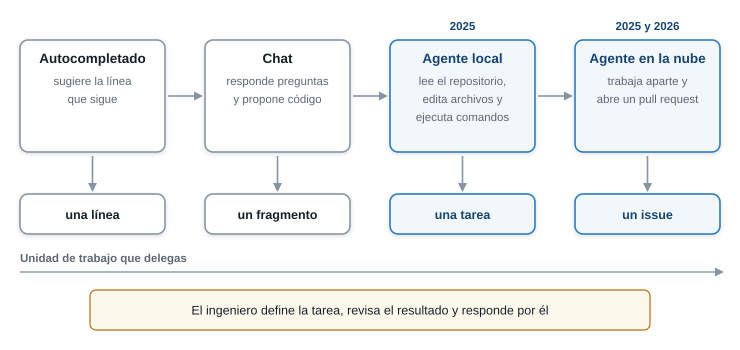
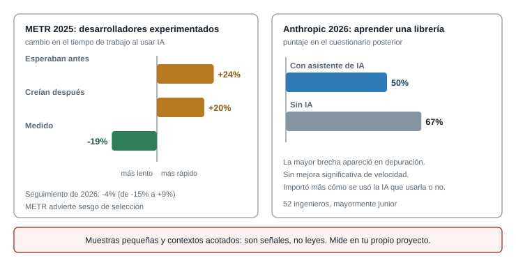
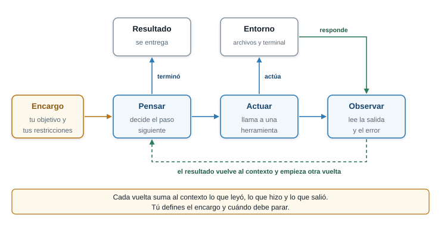
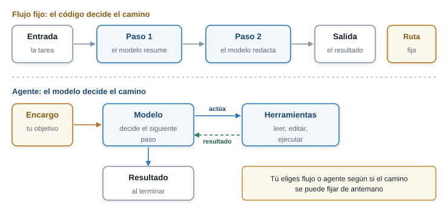
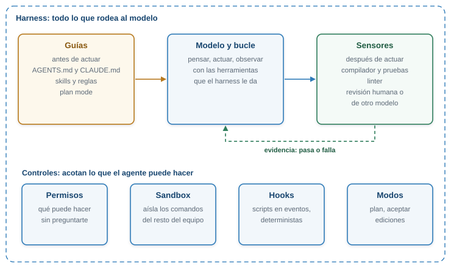
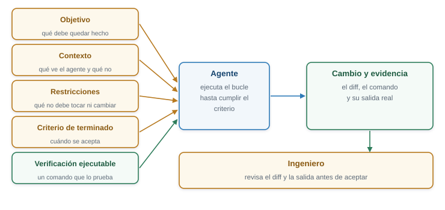
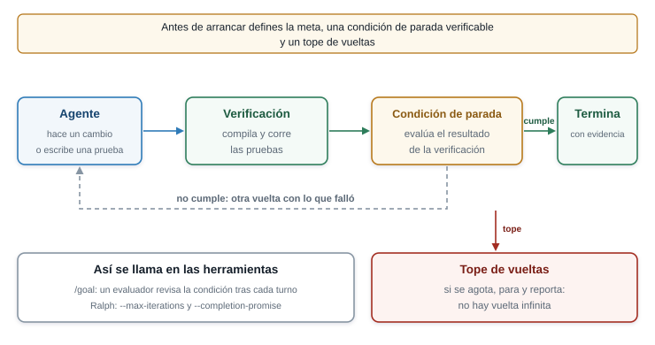
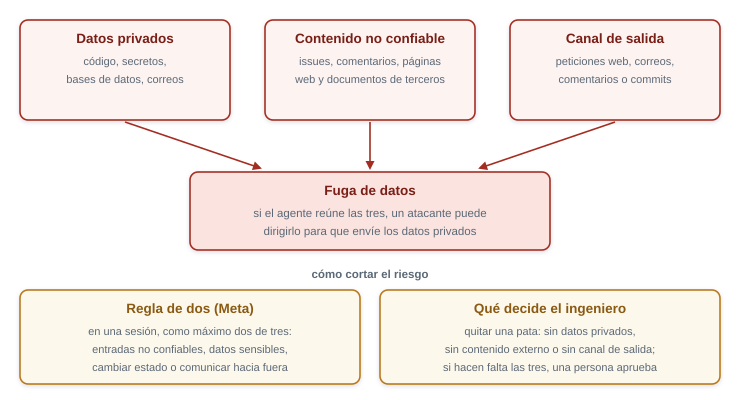
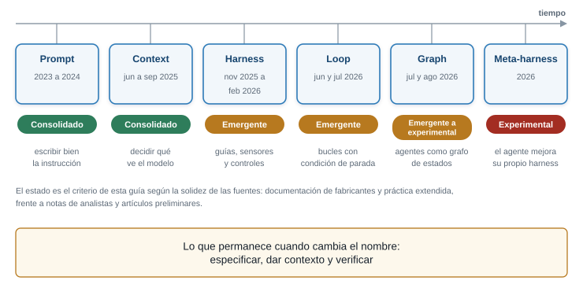

Ingeniería de software con agentes de IA
| Qué construyes | Un criterio de ingeniería para dirigir agentes de IA: cómo escribir un encargo que se pueda verificar, qué metodología usar según la tarea, cómo darle contexto y extensiones al agente, cuánta autonomía concederle y cómo verificar y gobernar lo que entrega. El caso de trabajo es un carrito de compras para Plaza |
| Prerrequisitos | Plaza terminada con la guía Plaza: formularios, validación y base de datos, con el catálogo en PostgreSQL (el caso de esta guía parte de una versión de Plaza que guarda los pedidos en memoria), y Git para el control de versiones |
| Herramientas | Un agente de código a elección (la sección 3 compara opciones), .NET SDK 10, PostgreSQL, Git y PowerShell |
Presentación interactiva: el recorrido de esta guía con diagramas animados, paso a paso
- La IA es la herramienta y tú eres el ingeniero: diriges el trabajo, entiendes lo que se hace y respondes por el resultado. El vibe coding aparece solo como contraste.
- Es una guía de criterio más que de comandos. Los archivos y comandos de ejemplo siguen la documentación oficial de cada herramienta y sirven de modelo: adáptalos a tu proyecto.
- Los comandos van en PowerShell y los de
dotnetse ejecutan dentro de la carpetaPlaza. - Todas las metodologías aparecen con sus ventajas e inconvenientes y ninguna se presenta como la mejor: la elección depende de la tarea.
- Cuando una cifra la reporta quien la obtuvo, la guía lo dice como autoreportada. Todas las fuentes están al final, con la fecha de consulta.
- Cada sección termina con una sección Comprueba. No sigas a la siguiente hasta que se cumpla.
Este campo cambia con rapidez. Los datos de esta guía se consultaron el 2026-11-20. Antes de apoyarte en uno de los siguientes, abre la página oficial y confirma la fecha: planes y precios (Cursor, GitHub Copilot, Codex, OpenCode Go a 10 USD al mes, Kimi Code), qué clientes van en los planes gratuitos, versiones de modelos y de herramientas, la versión vigente de la especificación de MCP (2026-07-28) y el estado de las funciones en vista previa (agent view de Claude Code, equipos de agentes, Symphony).
Lo que vas a lograr
| Sección | Qué te llevas |
|---|---|
| 1 | La diferencia entre dejar que la IA programe y dirigirla como ingeniero, y lo que dice la evidencia medida |
| 2 | Cómo funciona un agente por dentro: el bucle, el harness y sus controles |
| 3 | Un mapa de herramientas y modelos, cerrados y abiertos, con costo, licencia y privacidad |
| 4 | El paso del prompt al encargo verificable: objetivo, contexto, restricciones, criterio de terminado y verificación |
| 5 | Las metodologías para trabajar con agentes, cada una con ventajas e inconvenientes |
| 6 | El caso del Carrito de Plaza construido con esas metodologías |
| 7 | Contexto y extensión: AGENTS.md, skills, subagentes, hooks, plugins y MCP, con sus riesgos |
| 8 | Autonomía: bucles con condición de parada, trabajo en paralelo y del issue al pull request |
| 9 | Verificar y gobernar: evidencia, seguridad y responsabilidad |
| 10 | La frontera: el vocabulario que cambia y lo que permanece |
1. El cambio de rol: de autocompletar a agentes
Durante años, la IA en el editor completó una línea. Hoy un agente recibe una tarea, lee el repositorio, edita varios archivos, ejecuta comandos y mira el resultado para decidir su siguiente paso. La unidad de trabajo pasó de la línea a la tarea y, con ella, la responsabilidad del ingeniero: ya no revisas una sugerencia de una línea sino un cambio que atraviesa el proyecto.

Cuatro etapas de la IA en el desarrollo: cada una delega una unidad de trabajo más grande.
Con un agente local, la tarea “agrega el carrito” se convierte en una secuencia de acciones: leer CatalogoController, crear la migración de EF Core para los campos nuevos y ejecutar dotnet build para ver si compila. Cada paso lo decide el agente con lo que acaba de leer. Tu trabajo está antes (qué se pide y cómo se prueba) y después (qué se acepta).
Vibe coding frente a ingeniería con agentes
Andrej Karpathy llamó vibe coding, en una publicación en X del 2 de febrero de 2025, a entregarse por completo a las sensaciones y olvidar que el código existe (“fully give in to the vibes… forget that the code even exists”). El diccionario Collins lo eligió palabra del año 2025. Para un prototipo que vas a tirar, ese modo es una decisión legítima.
Para un sistema que otras personas usan, falta lo que define el trabajo de un ingeniero: entender, verificar y responder. Simon Willison trazó la misma línea el 6 de mayo de 2026: vibe coding es no mirar el código y agentic engineering es el trabajo profesional con agentes. Antes, el 7 de octubre de 2025, había propuesto vibe engineering para el uso profesional: pruebas automatizadas, planificar antes, documentación, control de versiones, integración continua y revisión, con el ingeniero responsable de lo que entrega. Según la prensa especializada, Karpathy propuso a comienzos de febrero de 2026 el nombre agentic engineering para ese trabajo. Anthropic usa agentic coding desde abril de 2025 en sus guías de buenas prácticas.
| Aspecto | Vibe coding | Ingeniería con agentes |
|---|---|---|
| Quién decide qué se construye | El agente, guiado por impresiones | El ingeniero, con un encargo, restricciones y un criterio de terminado |
| Quién entiende el código | Nadie está obligado a hacerlo | El ingeniero puede explicar cada cambio que entrega |
| Quién verifica | Se ejecuta y “parece funcionar” | Pruebas, comandos y revisión del diff, con evidencia |
| Para qué sirve | Prototipos desechables y exploración | Software que se mantiene, se despliega y tiene usuarios |
| Qué riesgo asume | Defectos ocultos y deuda que nadie ve | El costo de planear, revisar y escribir buenas pruebas |
El vibe coding sirve en esta guía como línea base: el punto de comparación contra el que mides lo que agrega cada práctica de ingeniería.
Qué dice la evidencia
Dos estudios miden lo que pasa cuando se programa con IA.
METR publicó el 10 de julio de 2025 un estudio con desarrolladores de código abierto con experiencia, que trabajaron en sus propios repositorios: con IA tardaron 19% más. Antes de empezar esperaban ir 24% más rápido y, después de terminar, seguían creyendo que habían ido 20% más rápido. La percepción y la medición se separaron. En el seguimiento del 24 de febrero de 2026, METR midió -4% con un intervalo de -15% a +9% y advirtió que hay sesgo de selección.
Anthropic publicó el 29 de enero de 2026 un ensayo con 52 ingenieros, mayormente junior, que aprendían una librería nueva. Quienes usaron un asistente de IA obtuvieron 50% en el cuestionario posterior frente a 67% de quienes no lo usaron, con la mayor brecha en depuración y sin una mejora significativa de velocidad. Importó más cómo se usó la IA que usarla o no.

Lo que miden METR (2025) y Anthropic (2026). Cifras de cada estudio, no promesas.
Las limitaciones son parte de la evidencia. METR mide a desarrolladores experimentados con las herramientas de comienzos de 2025. El estudio de Anthropic tiene una muestra pequeña, una sola librería, una medición inmediata y un asistente de chat, no un agente. Ninguno de los dos habla de tu proyecto.
Dos lecciones de ingeniería salen de ahí. La primera: tu sensación de ir más rápido no prueba nada, así que mide con tu propio criterio de terminado. La segunda: delegar lo que no entiendes impide aprenderlo y te quita la capacidad de verificar el resultado.
Comprueba
Puedes explicar con tus palabras la diferencia entre vibe coding y agentic engineering, dar dos razones por las que una percepción de productividad no basta como evidencia y nombrar una limitación de cada estudio.
2. El agente por dentro
El bucle
Anthropic definió en “Building effective agents” (19 de diciembre de 2024) un agente como un modelo de lenguaje que usa herramientas según la retroalimentación del entorno, en un bucle. En cada vuelta el agente piensa qué hacer, actúa con una herramienta (leer un archivo, editarlo, ejecutar un comando) y observa el resultado, que entra a su contexto para la vuelta siguiente. Termina cuando considera que cumplió la tarea.

El bucle: pensar, actuar, observar. Cada vuelta suma al contexto y el ingeniero define cuándo parar.
Un turno típico: el agente lee Models/Producto.cs, decide agregar Stock y EsOrganico, edita el archivo y ejecuta dotnet build. Si el compilador devuelve un error, ese error es la observación y el agente lo corrige en la vuelta siguiente. Sin ese resultado el agente no tendría de dónde aprender que se equivocó.
Flujo fijo frente a agente
El mismo texto de Anthropic distingue dos formas de usar un modelo. En un flujo (workflow), el código que escribes define la ruta y el modelo ocupa pasos concretos. En un agente, el modelo dirige su propio proceso y decide qué herramienta usar y cuándo parar. El flujo es más predecible y más barato de probar. El agente aguanta tareas cuyo camino no se puede fijar de antemano. Elegir bien entre los dos es una decisión de ingeniería.

En el flujo, el código decide el camino. En el agente, lo decide el modelo.
Anthropic describe siete patrones, de lo más fijo a lo más autónomo:
| Patrón | Idea |
|---|---|
| Modelo aumentado | Un modelo con recuperación de información, herramientas y memoria |
| Encadenamiento | La salida de un paso es la entrada del siguiente |
| Enrutamiento | Se clasifica la entrada y se envía a un manejador especializado |
| Paralelización | Varias llamadas a la vez, por partes o por votación |
| Orquestador y trabajadores | Un modelo divide la tarea en el momento y delega en otros |
| Evaluador y optimizador | Un modelo genera y otro evalúa, en ciclo |
| Agentes autónomos | El modelo planifica y actúa en bucle con retroalimentación del entorno |
El harness: todo lo que no es el modelo
Dos agentes con el mismo modelo se comportan distinto según lo que los rodea. Ese entorno se llama harness. Birgitta Boeckeler (Thoughtworks), en martinfowler.com el 2 de abril de 2026, lo define como todo lo que hay en el agente menos el modelo, y lo divide en dos:
- Guías (feedforward): actúan antes de que el agente actúe. Son instrucciones, reglas, skills y el modo de planificación.
- Sensores (feedback): actúan después y le devuelven evidencia. Pueden ser computacionales (el compilador, las pruebas, un linter, deterministas) o inferenciales (otro modelo que revisa).

El harness: guías antes, sensores después y controles que acotan lo que el agente puede hacer.
OpenAI contó el 11 de febrero de 2026, en “Harness engineering”, un caso autoreportado: un equipo de 3 a 7 ingenieros produjo unas 1.500 pull requests y cerca de un millón de líneas en cinco meses sin código escrito a mano. Su AGENTS.md gigante falló y lo redujeron a unas 100 líneas que funcionan como tabla de contenidos hacia la carpeta docs/. Es el relato de un solo equipo sobre su propio trabajo: sirve como ejemplo de práctica, no como medida de lo que lograrás.
Los controles del harness, en Claude Code (otras herramientas ofrecen equivalentes):
| Control | Qué hace | Quién decide |
|---|---|---|
| Permisos | Reglas que permiten, preguntan o niegan herramientas y rutas. La negación gana sobre las reglas que permiten | Tú, en la configuración |
| Sandbox | Aísla a nivel de sistema operativo los comandos de Bash | La herramienta, con tu configuración |
| Hooks | Scripts que se ejecutan en eventos del ciclo. Un hook PreToolUse puede bloquear una llamada |
El script, no el modelo |
| Modos | Plan mode (Shift+Tab, /plan o claude --permission-mode plan) para que el agente proponga sin editar, y modos que aceptan ediciones |
Tú, según la tarea |
Comprueba
Puedes dibujar el bucle del agente, decir cuándo conviene un flujo fijo y cuándo un agente, y nombrar una guía, un sensor y un control del harness en tu propio proyecto.
3. Herramientas y modelos
Por modalidad
Las herramientas se agrupan por dónde vive el agente. Varias ofrecen más de una modalidad: Claude Code corre en terminal, en VS Code y JetBrains, en escritorio y en la web (la versión web corre en la nube).

Herramientas por modalidad y los dos grandes grupos de modelos. Ninguna es la elección correcta para todo.
| Modalidad | Herramientas | Dónde corre y cuándo conviene |
|---|---|---|
| IDE | Cursor, GitHub Copilot en VS Code, Trae | En tu editor. Conviene cuando quieres ver y aceptar cada cambio sobre el código abierto |
| Terminal | Claude Code, Codex CLI, OpenCode, Qwen Code, Kimi Code | En tu equipo, sobre tu carpeta. Conviene para tareas que tocan varios archivos y ejecutan comandos, y para trabajo que se puede guionar |
| Nube | Codex cloud, GitHub Copilot cloud agent, Claude Code web | En un entorno remoto, en segundo plano. Conviene para tareas definidas por un issue que terminan en un pull request para revisar |
Qué se puede usar sin pagar
Gratis casi siempre significa con límites. Estas son las opciones documentadas al 2026-11-20:
- GitHub Copilot: tiene un plan Free limitado y un plan Student gratis para estudiantes verificados. Todos los planes incluyen Copilot CLI.
- Codex de OpenAI: los clientes locales (CLI, extensión de IDE y app) vienen en todos los planes de ChatGPT, incluidos Free y Go. Codex cloud no va en Free ni en Go.
- OpenCode: agente de código abierto con terminal, escritorio y web, que conecta muchos proveedores de modelos. El programa no se paga, pero el modelo que conectes puede costar. Existe OpenCode Go a 10 USD al mes.
- Kimi Code: de Moonshot, con CLI, extensión de IDE y web, y un plan gratuito llamado Adagio (dato de fuentes secundarias).
- Qwen Code: CLI de Alibaba con licencia Apache 2.0.
- Cursor: los agentes en la nube van en planes de pago y los precios cambiaron en 2026. No hay un plan para estudiantes confirmado.
Modelos cerrados y abiertos
El modelo es una elección separada de la herramienta. Los cerrados (Claude, GPT, Gemini) se usan por API o suscripción del proveedor. Los abiertos de origen chino (DeepSeek, Qwen, Kimi, GLM, MiniMax) publican sus pesos y se pueden usar por una API compatible dentro de herramientas como OpenCode o Claude Code, o correr en tu equipo con Ollama o vLLM.
| Criterio | Cerrados | Abiertos |
|---|---|---|
| Costo | Por token o por suscripción | Por token en un proveedor, o el costo de tu hardware si corres el modelo local |
| Licencia | Términos de servicio del proveedor | Licencia de pesos propia de cada modelo: léela en su ficha |
| Privacidad | Tu código y tus datos viajan a los servidores del proveedor | Depende de dónde corra: en un proveedor, importa en qué país quedan los datos; en tu equipo, no salen |
| Correr local | No | Sí, si tu hardware lo permite |
Los modelos cambian cada pocas semanas, así que cualquier versión que se cite caduca rápido. Estos datos se verificaron el 2026-11-20 en la ficha de cada modelo: DeepSeek V4 usa licencia MIT, Qwen3-Coder usa Apache 2.0, GLM-5.3 y Kimi K3.1 usan licencias propias que debes leer, y qwen3-coder:30b pesa 19 GB en Ollama. Antes de decidir, consulta la ficha oficial de cada uno y confirma que sigan vigentes. Qué elegir depende del costo que puedas pagar, de la licencia que necesites, de qué datos puedes enviar fuera y de cuánta verificación exige la tarea.
Comprueba
Puedes explicar por qué un proyecto con datos de personas reales no debe enviarse a cualquier proveedor y nombrar una herramienta por modalidad con una razón para elegirla.
4. Del prompt al encargo verificable
Las guías oficiales de Anthropic, OpenAI (Codex) y GitHub (Copilot) coinciden en lo esencial: un buen encargo tiene objetivo, contexto, restricciones y una verificación comprobable. Anthropic lo resume en dos consejos de sus buenas prácticas: “Give Claude a check to run” y “Tell Claude what it can’t see”. En GitHub, el issue que asignas a Copilot funciona como el prompt: describe el problema, los criterios de aceptación y los archivos a tocar.

Las cinco partes de un encargo verificable y la evidencia que debe volver para revisarse.
| Parte | Pregunta que contesta | Ejemplo en el Carrito |
|---|---|---|
| Objetivo | Qué debe quedar hecho | Un carrito en /carrito para pedir varios productos en un solo pedido |
| Contexto | Qué ve el agente y qué no | Plaza es ASP.NET Core MVC con EF Core y PostgreSQL; lee CatalogoController y ICatalogo |
| Restricciones | Qué no debe tocar ni cambiar | /catalogo/{id}/pedir sigue funcionando igual |
| Criterio de terminado | Cuándo se acepta | El 10% de descuento desde 50.000 COP, domicilio gratis desde 80.000 COP |
| Verificación ejecutable | Qué comando lo prueba | dotnet build sin errores y una prueba por cada regla de precio |
Un encargo malo
Hazme un carrito para Plaza.El agente tiene que inventar qué es un carrito: si hay descuento, cuánto cuesta el domicilio, qué pasa con la cantidad. No hay manera de saber cuándo terminó, así que declarará que terminó cuando le parezca. Tampoco hay un comando que pruebe el resultado: aceptarlo sería confiar en que “parece funcionar”.
Un encargo verificable
Objetivo
Agregar a Plaza un carrito en /carrito para pedir varios productos en un solo pedido.
Contexto
- Plaza es ASP.NET Core MVC (.NET 10) con EF Core y PostgreSQL.
- Hoy existen /catalogo, /catalogo/{id} y /catalogo/{id}/pedir.
- Lee CatalogoController y las interfaces ICatalogo e IPedidos antes de proponer cambios.
Restricciones
- /catalogo/{id}/pedir sigue funcionando igual.
- Los paquetes nuevos solo pueden ser los de pruebas.
- El nombre del cliente sigue la regla del pedido actual: obligatorio, entre 3 y 60 letras.
Criterio de terminado
- Producto gana Stock y EsOrganico, con una migración de EF Core y estos datos iniciales:
Tomate 20 orgánico, Aguacate 15 orgánico, Papa 50 no orgánico, Panela 30 no orgánico.
- La cantidad de cada producto es un entero entre 0 y su stock. Si no lo es, el mensaje es
"La cantidad de Tomate debe estar entre 0 y 20".
- Subtotal = suma de precio por cantidad. Descuento de 10% del subtotal desde 50.000 COP.
Domicilio de 5.000 COP, gratis desde 80.000 COP.
- Con todas las cantidades en 0 se muestra "Agrega al menos un producto".
- Al confirmar, una página de gracias con cada producto y su cantidad, subtotal, descuento,
domicilio, total y número de pedido.
Verificación
- dotnet build termina sin errores.
- Una prueba automática por cada regla de precio, en los límites 49.999, 50.000, 79.999 y
80.000 COP.
- Con dotnet run, una petición a /carrito devuelve los cuatro productos con su stock.
Antes de dar la tarea por terminada, pega la salida real de estos comandos.Fíjate en lo que cambió. El agente ya no decide las reglas: las recibe con sus números y sus mensajes literales. Cada regla tiene un caso de prueba en su límite, que es donde suelen estar los errores. Y la última línea pide evidencia en lugar de una afirmación.
Comprueba
Escribes un encargo para una tarea tuya con las cinco partes y puedes decir, para cada criterio de terminado, qué comando lo comprueba.
5. Metodologías para trabajar con agentes
Las metodologías para trabajar con agentes se diferencian, sobre todo, en lo que escribes y apruebas antes de que el agente toque el código. En un extremo no escribes nada. En el otro, el agente produce varios documentos que tú revisas antes de ver una sola línea de código. No existe una metodología oficial: son prácticas que distintos autores y fabricantes han nombrado en los últimos dos años, y esta sección las ordena por esa pregunta.
![Un eje horizontal de menos a más ceremonia previa. De izquierda a derecha: vibe coding, que solo tiene el prompt y es la línea base; plan mode, con un plan que se aprueba antes de editar; TDD con augmented coding, con pruebas en rojo antes de cada regla; ciclo autónomo con autoauditoría, con criterios de parada y tope de vueltas; ODD, que no escribe nada si la tarea es pequeña y un documento si es grande; compound engineering, con un plan revisado y una nota de lo aprendido; y SDD, con constitución, especificación, plan y tareas. Una nota dice que la ceremonia no mide la calidad y que se elige según la tarea.](imagenes/mapa-metodologias.svg)
Las metodologías ordenadas por lo que escribes antes de que el agente programe. La ceremonia no mide la calidad.
Cada práctica se presenta igual: qué es y quién la propone, cómo se trabaja paso a paso, un ejemplo real del Carrito de Plaza con extractos copiados de los archivos que dejó el agente, cómo absorbió los dos cambios de requisito (C1 y C2), cuánto consumió y sus ventajas e inconvenientes. Ninguna se presenta como la mejor: la tarea decide.
Los ejemplos salen del experimento que cuenta la sección 6: el mismo encargo (R1 a R8) y dos cambios posteriores (C1 y C2), hechos una vez con cada metodología, sobre copias del mismo punto de partida y con el mismo modelo. Las rutas de los extractos empiezan por la carpeta del proyecto, por ejemplo 03-sdd/. Las cifras de consumo las reportó cada agente al terminar y vienen de una sola corrida: describen lo que pasó en este caso, no predicen lo que te pasará. Para leer los tokens, ten presente que cada sesión parte de un piso fijo de unos 85.000 a 90.000 tokens de contexto del entorno (instrucciones generales y definiciones de herramientas), que se ve en los cambios de una línea, que gastan unos 91.000. Lo que distingue a las metodologías es lo que se suma por encima de ese piso, y plan mode paga el piso dos veces por fase porque cada fase tiene dos turnos, el del plan y el del código.
| Metodología | Qué escribes antes de programar | Para qué tarea suele servir |
|---|---|---|
| Vibe coding | Solo el prompt | Un prototipo que vas a descartar |
| Plan mode (explorar, planear, codificar) | Un plan que apruebas antes de que el agente edite | Una tarea que toca varios archivos y cuyo rumbo quieres ver antes de editar |
| SDD | Constitución, especificación, plan y tareas | Una funcionalidad grande en la que varias personas deben acordar qué se construye |
| ODD | Nada si la tarea es pequeña; un documento si es grande | Un proyecto con tareas de tamaños muy distintos |
| TDD con augmented coding | Pruebas que fallan antes de cada regla | Reglas con números y límites, como el dinero |
| Ciclo autónomo con autoauditoría | Criterios de parada y un tope de vueltas | Una tarea con un criterio de terminado que una máquina puede comprobar |
| Compound engineering | Un plan revisado y, al cerrar, una nota de lo aprendido | Un proyecto que vas a seguir tocando y cuyo aprendizaje conviene conservar |
La última columna es una orientación para empezar a pensar, no una regla. Cada subsección dice quién propone la práctica, qué costó y qué falló en el Carrito.
Vibe coding: la línea base
Qué es y quién la propone. Andrej Karpathy lo nombró el 2 de febrero de 2025 (sección 1). Describes lo que quieres, el agente escribe, ejecutas y pides ajustes sin leer el código. El enunciado del Carrito no dice cómo verificar y el vibe coding no agrega ninguna verificación: por eso sirve de punto de comparación.
Cómo se trabaja.
- Describes el resultado que quieres con una frase o un párrafo.
- El agente edita el proyecto y te dice que terminó.
- Ejecutas la aplicación y miras si parece funcionar.
- Pides ajustes con otra frase y vuelves al paso 2.
Para R1 a R8 el agente hizo un solo commit, llamado carrito, con 12 archivos (416 líneas añadidas y 14 quitadas) y, según su informe, no comprobó R2 a R8. Ante C1 cambió dos archivos. Este es el cambio de cálculo, en 01-vibe-coding/Services/PedidosCarrito.cs (commit 0a9289b):
- public static (decimal subtotal, decimal descuento, decimal domicilio, decimal total) Calcular(decimal subtotal)
+ public static (decimal subtotal, decimal descuento, decimal domicilio, decimal total) Calcular(decimal subtotal, decimal subtotalOrganicos)
{
- var descuento = subtotal >= 50000m ? subtotal * 0.10m : 0m;
+ var descuento = subtotal >= 50000m ? subtotalOrganicos * 0.10m : 0m;El agente no ejecutó el cálculo para ver si daba lo esperado. En C2 descubrió que el botón ya decía “Confirmar pedido” y, como /carrito no muestra un total, puso en negrita el de la página de gracias: un supuesto que no confirmó. Este es el cambio, en 01-vibe-coding/Views/Carrito/Gracias.cshtml (commit af06a8d):
- <p>Total: $@Model.Total</p>
+ <p><strong>Total: $@Model.Total</strong></p>Consumo (autoreportado). F1: 109.273 tokens, 12 llamadas a herramientas y 100,5 segundos. C1: 92.216 tokens, 7 llamadas y 39,2 segundos. C2: 91.280 tokens, 5 llamadas y 44,9 segundos. Es el consumo más bajo de los siete proyectos: casi todo es el piso del entorno.
| Ventajas | Inconvenientes |
|---|---|
| Es la más rápida y la que menos tokens gasta: 292.769 en las tres fases | Nada obliga a comprobar el resultado: en F1 no se comprobaron R2 a R8, y la verificación independiente de la sección 6 encontró el único defecto real de los siete proyectos |
| No exige escribir nada antes y sirve para explorar una idea | C1 se aplicó sin ejecutar el cálculo que cambiaba |
| Sirve para un prototipo que vas a descartar | Los supuestos, como la negrita en la página de gracias, quedan sin confirmar |
Plan mode y Explore-Plan-Code-Commit
Qué es y quién la propone. Anthropic recomienda separar la exploración y la planificación de la escritura de código: Explorar, Planear, Codificar y hacer Commit (Explore, Plan, Code, Commit). Publicó el patrón en abril de 2025 y hoy está en sus buenas prácticas. En Claude Code, el modo de planificación hace que el agente lea y proponga sin editar hasta que apruebes el plan.
Cómo se trabaja.
- Activas el modo de planificación con
Shift+Tab, con/plano conclaude --permission-mode plan. - Explorar: el agente lee el repositorio sin editar y te pregunta lo que no puede resolver leyendo.
- Planear: propone los pasos, los archivos que tocará y cómo comprobará cada uno. Tú lo lees, lo corriges y lo apruebas.
- Codificar: con el plan aprobado, el agente edita y ejecuta las comprobaciones que el plan prometió.
- Commit: un commit por paso del plan, con un mensaje que lo describa.
En el experimento cada fase tuvo dos turnos en la misma conversación: el plan y, tras la aprobación del docente, el código. El docente aprobó los planes sin cambios; en F1, el agente resolvió seis dudas como proponía. El plan vive en la conversación y no quedó como archivo del repositorio. Lo que sí quedó son los commits, uno por paso. Esta es la salida de git log --oneline en 02-plan-mode, sin el commit base:
197e3cf feat: mostrar el total del carrito en negrita
b2634de feat: aplicar el descuento del 10% solo a productos orgánicos
7334f83 feat: página /carrito con validación de cantidades y resumen de pedido
4097689 feat: calcular subtotal, descuento y domicilio del carrito
d159343 feat: agregar Stock y EsOrganico a Producto con migración y datos inicialesC1 llegó en una sesión nueva, donde el plan anterior no existe, así que el agente volvió a explorar desde cero antes de planear. El cambio final fue de cinco líneas en dos archivos. Esta es la parte del cálculo, en 02-plan-mode/Services/CalculadoraCarrito.cs (commit b2634de):
- public static ResumenCarrito Calcular(IEnumerable<(decimal Precio, int Cantidad)> lineas)
+ public static ResumenCarrito Calcular(IEnumerable<(decimal Precio, int Cantidad, bool EsOrganico)> lineas)
{
var subtotal = lineas.Sum(l => l.Precio * l.Cantidad);
- var descuento = subtotal >= MinimoParaDescuento ? subtotal * PorcentajeDescuento : 0m;
+ var subtotalOrganico = lineas.Where(l => l.EsOrganico).Sum(l => l.Precio * l.Cantidad);
+ // La condición mira el subtotal del pedido completo; el porcentaje se aplica solo a los orgánicos.
+ var descuento = subtotal >= MinimoParaDescuento ? subtotalOrganico * PorcentajeDescuento : 0m;En C2 la fase de exploración detectó que el botón ya decía “Confirmar pedido”, y el cambio fue una línea en Views/Carrito/_Resumen.cshtml.
Consumo (autoreportado, plan y código sumados). F1: 218.244 tokens (98.799 del plan y 119.445 del código), 17 llamadas y 247,6 segundos. C1: 196.119 tokens, 11 llamadas y 107,1 segundos. C2: 191.690 tokens, 11 llamadas y 90,6 segundos. Es el segundo consumo más alto de los siete proyectos, después de compound engineering. El piso se paga dos veces por fase: en C2, un cambio de una línea, el plan y el código sumaron 191.690 tokens.
| Ventajas | Inconvenientes |
|---|---|
| Corriges el rumbo en el plan, antes de que existan cambios que deshacer | El plan vive en la conversación: en una sesión nueva se vuelve a explorar y a planear, como pasó en C1 |
| El agente pregunta lo que no puede deducir leyendo: seis dudas en F1 | Para un cambio de una línea el plan duplica el piso del entorno: en C2 gastó 92.619 tokens en planear y 99.071 en codificar |
| Un commit por paso deja un historial fácil de leer | Un plan convincente puede estar equivocado, y aprobarlo sin leerlo traslada el problema a ti |
SDD con Spec Kit (y Kiro, OpenSpec)
Qué es y quién la propone. En el desarrollo dirigido por especificaciones (spec-driven development, SDD), la especificación y no el código es el artefacto principal, y el agente produce el código a partir de ella. GitHub publicó Spec Kit, un kit de código abierto, el 2 de septiembre de 2025 (blog y repositorio). Kiro, de AWS, organiza el trabajo en requirements.md, design.md y tasks.md (documentación). OpenSpec es otra opción de código abierto.
Birgitta Boeckeler (Thoughtworks) analizó estas herramientas el 15 de octubre de 2025 (artículo). Distingue tres grados: spec-first (se escribe una especificación antes y guía la tarea), spec-anchored (la especificación se conserva y se usa para evolucionar el sistema) y spec-as-source (la especificación es lo único que editan las personas y el código se genera). Observa que la mayoría de las herramientas solo llega al primero, que el markdown resulta repetitivo y tedioso de revisar y que una función pequeña sale mejor sin SDD. Existe además un debate abierto sobre si SDD es la cascada de la era de la IA.
Cómo se trabaja con Spec Kit. Cada paso es un comando de la forma /speckit-<paso> y el agente redacta el documento que le corresponde.
/speckit-constitution: fija los principios del proyecto. En Plaza son seis, como “Validación en el servidor” y “Verificación con evidencia”./speckit-specify: describe qué se construye y por qué, con historias de usuario y requisitos numerados (FR-001 en adelante)./speckit-clarify: el agente pregunta lo ambiguo y registra las respuestas en la sección Clarifications./speckit-plan: decide cómo se construye y generaplan.md,data-model.md,research.md, los contratos yquickstart.md./speckit-tasks: producetasks.md, la lista de tareas ordenada por historia de usuario./speckit-implement: ejecuta las tareas y las marca como hechas.
![Seis pasos de izquierda a derecha, cada uno un comando de Spec Kit: constitution, specify, clarify, plan, tasks e implement. Debajo de cada paso, el documento que produce: constitution.md con seis principios, spec.md con requisitos y criterios medibles, la sección Clarifications dentro de spec.md, plan.md con data-model.md y research.md, tasks.md con 22 tareas, y por último el código y las pruebas con evidencia. Una franja dice que el ingeniero revisa cada documento y que en esta prueba el agente respondió sus propias preguntas de clarify. Abajo, a la izquierda, el cambio C1 obligó a volver a la especificación y luego al plan, a las tareas y al código. A la derecha, lo medido: C1 tocó 7 documentos y 2 archivos de código, y C2 tocó 7 documentos para 1 línea de código.](imagenes/flujo-sdd.svg)
Los seis pasos de Spec Kit, el documento de cada uno y lo que pasó con C1 y C2 en el Carrito.
F1 dejó nueve documentos de proceso (la constitución, de 41 líneas, y ocho en specs/, con 589 líneas), 22 tareas y cuatro commits. Además, el andamiaje de Spec Kit sumó 5.405 de las 6.409 líneas añadidas al repositorio (git diff --numstat entre el commit base y el último de F1). Así dice la constitución sobre la verificación (03-sdd/.specify/memory/constitution.md):
### VI. Verificación con evidencia
Una funcionalidad MUST NOT darse por terminada sin evidencia ejecutada: la solución compila sin errores y las reglas de la especificación se comprueban contra la aplicación en marcha. Las reglas de cálculo con dinero MUST comprobarse con valores límite (justo debajo, justo en el umbral y justo encima). Razón: "compila" no significa "funciona".Ante C1, el agente actualizó la especificación 001 en lugar de abrir una 002 y dejó escrita la razón. Fragmento de 03-sdd/specs/001-carrito-pedido-multiple/spec.md:
El cliente cambió R4: “El descuento del 10% ahora se calcula solo sobre los productos orgánicos. La condición para aplicarlo no cambia: el subtotal del pedido debe ser de 50.000 COP o más.” Se actualizó esta misma especificación (no se abrió una
002) porque describe la misma funcionalidad, aún sin entregar, y una002dejaría en001una regla falsa y dos documentos en conflicto sobre el descuento. Cambian FR-006, la Historia 2, SC-002, los casos límite, las entidades y los supuestos.
El requisito que quedó, en el mismo archivo:
FR-006: El sistema MUST aplicar un descuento del 10% calculado solo sobre el subtotal de los productos orgánicos del pedido (suma de precio por cantidad de las líneas orgánicas), y solo si el subtotal del pedido completo es de 50.000 COP o más; si el subtotal del pedido es menor, o si el pedido no tiene productos orgánicos, el descuento es 0.
Los cinco commits de C1 muestran el orden: primero los documentos y al final el código (git log --oneline, del más reciente al más antiguo):
6d5d583 Marca las tareas del cambio de requisito con su evidencia
487156e Calcula el descuento solo sobre las líneas orgánicas del pedido
a37c127 Agrega a tasks.md la fase del cambio de requisito del descuento
c588264 Actualiza plan, modelo de datos, investigación y quickstart para el descuento solo sobre orgánicos
1344314 Actualiza la especificación: el descuento del 10% se calcula solo sobre los productos orgánicosC1 cambió 7 documentos (70 líneas añadidas y 22 quitadas) antes de tocar 2 archivos de código (6 y 2). En C2 el agente cambió 7 documentos (45 y 4) para una línea de código, y el requisito FR-015 fija el texto de un botón que ya existía:
FR-015: El botón que confirma el pedido en
/carritoMUST tener el texto exacto “Confirmar pedido”.
Consumo (autoreportado). F1: 206.206 tokens, 47 llamadas y 676,3 segundos, con Spec Kit 1.4.4.dev0 (commit a4d5712). C1: 160.161 tokens, 25 llamadas y 203,3 segundos. C2: 130.190 tokens, 20 llamadas y 162,2 segundos.
| Ventajas | Inconvenientes |
|---|---|
| Las decisiones y los supuestos quedan escritos y se revisan antes del código: cada Decisión está marcada en Clarifications | Es la metodología con más documentos y más andamiaje: 206.206 tokens en F1 y 7 documentos para una línea de código en C2 |
| La constitución fija reglas que el agente consulta en cada paso, como los valores límite para el dinero | Los documentos repiten información entre sí (requisitos, plan, tareas, quickstart) y son tediosos de revisar, como observa Boeckeler |
| Hay trazabilidad: cada tarea cita su historia y cada cambio cita el requisito que lo motiva | Las preguntas de clarify las respondió el propio agente: si no las lees, decidió por ti |
ODD
Qué es y quién la propone. Organic Driven Development (ODD) ajusta la ceremonia a la tarea: lo pequeño se hace directo y lo grande lleva un único documento de la funcionalidad, con los requisitos literales, las tareas y una bitácora. No hay documentación pública independiente que la respalde, así que esta subsección la describe por lo que hizo el agente y por el documento que dejó, no por una fuente externa. El tamaño no lo decide el número de archivos sino tres preguntas: si se entiende qué cambiar y dónde, si el riesgo está contenido y si el trabajo se podría retomar solo con el pedido original y el git diff.
Cómo se trabaja.
- Confirmas que el pedido autoriza un cambio y no solo una consulta.
- El agente explora el código y los requisitos antes de proponer nada.
- Clasifica la tarea como pequeña o grande con las tres preguntas.
- Si es pequeña, la hace directo y con su prueba. Si es grande, crea un único documento antes de escribir código.
- El documento tiene un encabezado corto,
## Specs(requisitos numerados S1, S2 y siguientes, con tu texto literal),## Tasks(una línea por tarea, con sus requisitos y su commit) y## Log(la bitácora, que empieza con tu pedido literal). - Avanza tarea por tarea, con la prueba en rojo antes del código, y marca una tarea como hecha solo con evidencia observada.
- Cierra declarando el riesgo del cambio.
En F1 el agente clasificó la tarea como grande porque la migración cambia datos persistidos, y creó 04-odd/odd/tasks/carrito.md: ocho requisitos (S1 a S8, los textos literales de R1 a R8), cuatro tareas y una bitácora. Estas son las líneas del documento que importan para C1:
- S4 (R4). "El descuento del 10% ahora se calcula solo sobre los productos orgánicos. La condición para aplicarlo no cambia: el subtotal del pedido debe ser de 50.000 COP o más." (cambio del cliente del 2026-11-20, ver L9; reemplaza el texto original de R4)
- [x] T2 | S2 (validación), S3, S4, S5 | Reglas puras de carrito con pruebas xUnit (rojo y verde) | commit: e653cc5; reabierta por el cambio de S4 (L9) y cerrada de nuevo en 58a7772 (L10)C1 llegó en una sesión nueva y el agente retomó del documento, en lugar de explorar desde cero. Lo clasificó como pequeño y lo anotó en la bitácora (entrada L9, abreviada):
Se reescribe solo S4 (el texto original de R4 queda en el historial de git, commit d4944e6). Se reabre solo T2, que es la tarea ligada a S4 (reglas puras de dinero); no se crea tarea nueva porque el cambio es una sola regla.
La entrada L10 registra el rojo y un error del propio agente que el ciclo rojo y verde sacó a la luz:
Rojo observado: con
LineaPedido.EsOrganicoagregado peroCalcularsin cambiar,dotnet test Plaza.Testsdio 3 con error y 22 superadas (pedido sin orgánicos esperaba 0 y dio 6.000; mezcla esperaba 3.500 y dio 7.200; condición sobre todo el pedido esperaba 700 y dio 6.300). Verde: tras cambiarCalculary el controlador, una prueba seguía en rojo por un error mío en la prueba (esperé domicilio 0 con subtotal 72.000, pero el domicilio gratis empieza en 80.000; lo correcto es 5.000 y total 73.500)
C2 se clasificó como pequeño y se hizo directo, sin tocar el documento: el botón ya cumplía y el agente puso en negrita el total de la página de gracias, con el supuesto declarado (commit 6ded32b).
Consumo (autoreportado). F1: 142.374 tokens, 23 llamadas y 442,7 segundos, con 21 pruebas xUnit y 40 comprobaciones HTTP en verde y 5 commits en la rama feature/carrito. C1: 112.023 tokens, 16 llamadas y 174,8 segundos, con 4 pruebas nuevas y 25 en verde. C2: 99.498 tokens, 8 llamadas y 85,0 segundos.
| Ventajas | Inconvenientes |
|---|---|
| La ceremonia se ajusta: C2 se resolvió directo, sin documento | Depende de clasificar bien: una tarea mal clasificada como pequeña se salta la ceremonia que necesitaba |
| El documento sobrevive a la sesión nueva: C1 empezó leyéndolo, no explorando desde cero | Es un documento más que mantener coherente: C1 obligó a reescribir S4 y a reabrir T2 |
| Los requisitos literales y la bitácora dejan rastro de cada decisión, y los supuestos van marcados como supuestos | No hay documentación pública independiente: hay poca evidencia externa sobre cuándo funciona mejor |
TDD con augmented coding
Qué es y quién la propone. En el desarrollo dirigido por pruebas (test-driven development, TDD) escribes una prueba que falla (rojo), el código mínimo que la hace pasar (verde) y luego ordenas el código (refactor). Simon Willison recomienda este ciclo rojo y verde con agentes y pide no saltarse el rojo: una prueba que nunca falló no demuestra nada (guía). Kent Beck llama augmented coding a programar con IA sin soltar la disciplina de TDD, y suma Tidy First: separar los cambios estructurales (ordenar sin cambiar lo que el programa hace) de los de comportamiento, en commits distintos. Boeckeler midió, en una muestra pequeña, que TDD dentro del bucle del agente gastó entre 3 y 8,5 veces más tokens (8,50 veces en la tarea pequeña, 2,96 en la mediana y 4,89 en la grande) sin una diferencia clara de calidad, y que los agentes a veces fingieron el rojo. Su cálculo cuenta las lecturas de caché a peso completo, y ella misma cree que eso exagera el costo real.
Cómo se trabaja.
- Eliges la siguiente regla del encargo y escribes (o pides) una prueba que la exprese con sus números y mensajes literales.
- Ejecutas la prueba y confirmas que falla por la razón correcta: es el rojo.
- El agente escribe el código mínimo y la prueba pasa: es el verde.
- Ordenas el código con las pruebas en verde.
- Haces commit:
comportamiento:si cambió lo que el programa hace yestructura:si solo lo reordenaste. - Repites con la regla siguiente.
En F1 el agente avanzó una regla por commit, con el esqueleto primero y el comportamiento después. Estos son los primeros commits de 05-tdd (git log --oneline):
dcf27d1 estructura: esqueleto de CalculadoraCarrito, LineaPedido y ResumenCarrito (sin comportamiento)
63539a5 comportamiento: subtotal del carrito como suma de precio por cantidad (R3)
4b72966 comportamiento: descuento del 10% desde 50.000 COP (R4)
afff5cc comportamiento: domicilio de 5.000 COP gratis desde 80.000 y total del carrito (R5)Ante C1 (que el agente numeró R9) primero agregó EsOrganico a la línea del pedido sin usarlo (un commit de estructura), cambió de forma explícita las dos pruebas viejas que la regla nueva contradecía y escribió las pruebas nuevas. El rojo quedó pegado en 05-tdd/tdd/evidencia.md; se omiten las líneas intermedias:
Con error CalculadoraCarritoTests.La_condicion_de_50000_se_mide_sobre_todo_el_pedido(organico: 20000, noOrganico: 30000, descuentoEsperado: 3000) [1 ms]
Mensaje de error:
Assert.Equal() Failure: Values differ
Expected: 3000
Actual: 5000,00
Con error! - Con error: 7, Superado: 21, Omitido: 0, Total: 28, Duración: 2 s - Plaza.Tests.dll (net10.0)Después de implementar lo mínimo, la suite completa quedó así:
Correctas! - Con error: 0, Superado: 70, Omitido: 0, Total: 70, Duración: 2 s - Plaza.Tests.dll (net10.0)Estos son los commits de C1 en orden de más reciente a más antiguo:
ceeb26d estructura: evidencia de la verificacion en la app real del cambio R9
7868e6e estructura: el subtotal de un conjunto de lineas sale a un metodo de CalculadoraCarrito
48faf8e comportamiento: el descuento del 10% se calcula solo sobre los productos organicos (R9)
fdf4be7 comportamiento: las pruebas de descuento de R4 usan productos organicos porque la regla cambio (R9)
bdedc43 estructura: LineaPedido lleva EsOrganico, aun sin usarse en el calculoEn C2 una sola prueba nueva. El primer rojo se descartó porque la expresión regular de la prueba estaba mal escrita: fallaba por la razón equivocada. Se corrigió y se repitió el rojo.
Consumo (autoreportado). F1: 199.866 tokens, 62 llamadas y 1.109,1 segundos, con 61 pruebas xUnit en verde, 44 bloques de rojo y verde en tdd/evidencia.md (832 líneas) y 21 commits. C1: 120.777 tokens, 20 llamadas y 254,3 segundos, con 8 pruebas nuevas (7 en rojo), 13 líneas de producción y 158 de evidencia. C2: 112.543 tokens, 20 llamadas y 148,3 segundos, con 70 de 70 pruebas en verde.
| Ventajas | Inconvenientes |
|---|---|
| Cada regla del encargo queda con una prueba que falló antes de pasar: C1 se detectó con 7 pruebas en rojo | Es la segunda F1 más larga de los siete proyectos, después de compound engineering: 62 llamadas y 1.109,1 segundos |
| Las pruebas siguen en el repositorio: 70 pruebas protegen R1 a R8 frente a cambios futuros | Hay que vigilar el rojo: un rojo por la razón equivocada, como la expresión regular de C2, no prueba nada |
Los commits estructura: y comportamiento: hacen el historial fácil de revisar |
Las pruebas pasaron con un formulario sin botón: solo probar la aplicación real lo reveló |
Ciclo autónomo con autoauditoría
Qué es y quién la propone. Es un ciclo en que el agente se supervisa solo: ANALIZAR, EJECUTAR, VERIFICAR, AUDITAR, CORREGIR y VOLVER A VALIDAR, repetido hasta cumplir los criterios de parada que fijas tú o hasta un tope de vueltas. Aquí es una receta de prompt, no un producto: corresponde al patrón evaluador-optimizador que Anthropic describe en Building effective agents y es el mismo tipo de bucle de la sección 8. Su límite está documentado: Huang y otros (arXiv 2310.01798, ICLR 2024) mostraron que la autocorrección sin una señal externa no mejora el razonamiento de forma confiable, mientras que con una señal externa, como las pruebas, sí ayuda.
Cómo se trabaja. Antes de empezar fijas los criterios de parada y un tope de vueltas. Aquí fueron: R1 a R8 comprobadas con evidencia, compilación sin advertencias nuevas y una auditoría sin hallazgos, o 5 vueltas. Cada vuelta tiene seis pasos:
- ANALIZAR: el agente lee el código y decide el alcance.
- EJECUTAR: cambia el código y las pruebas.
- VERIFICAR: compila, ejecuta las pruebas y prueba la aplicación con
curl. - AUDITAR: busca hallazgos con la evidencia a la vista y los anota.
- CORREGIR: arregla cada hallazgo.
- VOLVER A VALIDAR: repite la verificación. Si la auditoría de la vuelta siguiente no encuentra nada, el ciclo para.
![Arriba, una franja del ingeniero: antes de arrancar fija los criterios de parada y un tope de vueltas, que en estas pruebas fue de cinco. El ciclo tiene seis pasos. En la fila de arriba, de izquierda a derecha: analizar, ejecutar y verificar. En la fila de abajo, de derecha a izquierda: auditar, corregir y volver a validar. Una flecha sube de volver a validar a analizar para empezar otra vuelta. Verificar y volver a validar usan una señal externa: compilador, pruebas y curl. Abajo, a la izquierda, las vueltas reales en Plaza: tres para R1 a R8, dos para C1 y dos para C2. A la derecha, el límite: autocorregirse sin una señal externa no mejora de forma confiable.](imagenes/ciclo-autonomo.svg)
El ciclo con su condición de parada, las vueltas reales del Carrito y el límite de la autocorrección.
El agente dejó un registro por vuelta en 06-ciclo-autonomo/ciclo/registro.md. En la vuelta 1 de F1, la auditoría encontró dos hallazgos sobre un enlace que el propio agente había agregado al catálogo sin que se lo pidieran:
- El enlace del catálogo al carrito era un
href="/carrito"escrito a mano; el resto de las vistas usa tag helpers (asp-controller,asp-action), así que se rompería si cambia la ruta.- Ninguna prueba cubría ese enlace.
F1 cerró en la vuelta 3 de 5. Ante C1, la auditoría de la vuelta 1 detectó un riesgo del propio método, que el mismo agente construye y audita:
Los casos esperados los calculé yo a mano y yo escogí las combinaciones: puede haber un sesgo compartido entre el código y la prueba. Falta una verificación independiente que barra combinaciones.
La vuelta 2 lo resolvió con una señal externa: un script fuera del proyecto calculó el resultado esperado por su cuenta y lo comparó con la página de gracias de la aplicación real para 499 combinaciones de cantidades (426 con descuento mayor que 0), sin diferencias. En C2 la auditoría pidió una comparación contra el commit anterior y ver la negrita renderizada en Chrome sin interfaz gráfica.
Consumo (autoreportado). F1: 147.706 tokens, 35 llamadas y 667,3 segundos, en 3 vueltas, con 35 comprobaciones HTTP y 3 commits. C1: 123.453 tokens, 17 llamadas y 242,8 segundos, en 2 vueltas y con 41 comprobaciones. C2: 115.687 tokens, 16 llamadas y 289,2 segundos, en 2 vueltas y con 48 comprobaciones.
| Ventajas | Inconvenientes |
|---|---|
| Cada vuelta termina con una auditoría escrita: los hallazgos (enlace a mano, formato de pesos, sesgo de casos calculados a mano) quedaron registrados y corregidos | El mismo agente construye y audita: el sesgo compartido es un riesgo real y solo se mitigó al agregar un script independiente |
| El tope de vueltas y la condición de parada acotan el gasto | Una auditoría puede ampliar el alcance: el agente agregó un enlace que nadie pidió y luego lo auditó |
Se apoya en señales externas, como el compilador, curl y la comparación con el commit base, y no solo en la opinión del agente |
Sin una condición de parada verificable y un tope, un bucle gasta tokens sin control (sección 8) |
Compound engineering
Qué es y quién la propone. Every (Dan Shipper y Kieran Klaassen) lo describió el 11 de diciembre de 2025 (artículo): cuatro pasos, planear, trabajar, revisar y componer (“compound”), donde componer es registrar lo aprendido para que el siguiente trabajo sea más fácil. Proponen dedicar el 80% del esfuerzo a planear y revisar y el 20% a trabajar y componer: son cifras de sus autores y esta guía no las verificó por otra vía. Publican un plugin; el experimento usó la versión 3.38.2 (commit 58d1a83).
Cómo se trabaja.
- Planear: se escribe un plan y lo revisan varios agentes revisores antes de programar.
- Trabajar: se implementa por unidades pequeñas, con las pruebas primero.
- Revisar: varios revisores independientes miran el código en paralelo y se aplican los hallazgos.
- Componer: lo aprendido se escribe en el repositorio, con una nota por problema resuelto y un glosario del dominio, para que las sesiones siguientes lo lean.
En F1 el agente escribió un plan de 241 líneas en 07-compound/docs/plans/2026-11-20-2326-feat-carrito-de-pedidos-plan.md, que revisaron cinco revisores. Su cápsula de objetivo declara una condición de parada:
- **Stop conditions:** Detenerse si la migración generada no deja las cuatro filas sembradas con el stock y el campo orgánico pedidos, o si cualquier cambio altera el pedido de un solo producto (R8).Implementó cuatro unidades con las pruebas primero y, al terminar, cinco revisores de código trabajaron en paralelo: se aplicaron tres hallazgos. Uno de ellos lo habían dejado pasar el build, las pruebas y la revisión del plan. Quedó escrito como aprendizaje en 07-compound/docs/solutions/build-errors/proyecto-de-pruebas-anidado-en-proyecto-web-compile-remove-no-basta.md, con este encabezado:
title: "Un proyecto de pruebas anidado en un proyecto Web SDK: Compile Remove no basta"
date: 2026-11-20
category: build-errors
module: Plaza.csproj
tags: [dotnet, msbuild, sdk-web, proyecto-de-pruebas, publish, globbing]La nota cuenta cómo apareció el problema y cómo evitarlo:
La excepción solo apareció cuando un revisor de código consultó los elementos de MSBuild con
-getItem:Content.
Verificar el aislamiento mirando los elementos, no el build:
dotnet msbuild <proyecto>.csproj -getItem:Contenty-getItem:Noneno deben listar la subcarpeta, ydotnet publishno debe dejarla en la salida. Hacerlo después de compilar el proyecto anidado, porque los archivos debinyobjsolo existen entonces.
El último commit de F1, 01779eb, es “docs: registra el aprendizaje del proyecto de pruebas anidado y el vocabulario del carrito”. El glosario 07-compound/CONCEPTS.md define cuatro términos del dominio: Pedido simple, Pedido de carrito, Stock y Domicilio.
Consumo de F1 (autoreportado). 448.083 tokens, 107 llamadas a herramientas y 1.858,6 segundos, con 38 pruebas xUnit, 46 comprobaciones HTTP y 7 commits. El agente lanzó subagentes propios y su consumo puede no estar incluido en la cifra, así que el total real pudo ser mayor.
Consumo de C1 y C2 (autoreportado). C1: 293.397 tokens, 66 llamadas y 568,3 segundos, con 50 pruebas xUnit, 56 comprobaciones HTTP y 4 commits. C2: 195.382 tokens, 34 llamadas y 228,1 segundos, con 58 comprobaciones HTTP y 1 commit. En total, 936.862 tokens: es el consumo más alto de los siete proyectos.
En C1, en una sesión nueva, el agente leyó sus aprendizajes previos y el glosario antes de planear. La nota de docs/solutions/ no aplicaba, porque el cambio no agrega proyectos ni toca Plaza.csproj; el glosario sí aplicaba. Lo dejó escrito en el plan nuevo, de 177 líneas (07-compound/docs/plans/2026-11-20-2353-feat-descuento-solo-organicos-plan.md):
CONCEPTS.md: se usaron los términos “Pedido de carrito” y “Domicilio”. “Descuento” no estaba definido y se agregó.
docs/solutions/build-errors/proyecto-de-pruebas-anidado-en-proyecto-web-compile-remove-no-basta.md: se leyó y no cambió este plan, porque el cambio no agrega proyectos ni tocaPlaza.csproj. Solo importaría si se agregara un proyecto o una carpeta de pruebas nueva.
Implementó con rojo y verde. Este es el cambio de cálculo, en 07-compound/Services/CalculadoraCarrito.cs (commit 7813c5c):
- public static Totales Calcular(decimal subtotal)
+ public static Totales Calcular(IEnumerable<LineaPedido> lineas)
{
- var descuento = subtotal >= MinimoParaDescuento ? subtotal * PorcentajeDescuento : 0m;
+ var subtotal = lineas.Sum(l => l.Subtotal);
+ // La condicion mira el pedido completo; el porcentaje, solo lo organico.
+ var subtotalOrganico = lineas.Where(l => l.EsOrganico).Sum(l => l.Subtotal);
+ var descuento = subtotal >= MinimoParaDescuento ? subtotalOrganico * PorcentajeDescuento : 0m;Aquí apareció una tensión entre dos pasos del plugin. El planificador (ce-plan) agregó el término Descuento al glosario con las cifras. Al cerrar, el paso de componer (ce-compound) las quitó, porque un glosario no debe llevar números que pueden cambiar. Este es el cambio en 07-compound/CONCEPTS.md (commit 7aa01f9):
-La rebaja del 10% que se aplica a un pedido de carrito. Se calcula solo sobre el subtotal de los productos orgánicos, y solo se aplica cuando el subtotal del pedido completo (orgánico o no) es de 50.000 COP o más.
+La rebaja que se aplica a un pedido de carrito. Se calcula solo sobre los productos orgánicos del pedido, pero solo se aplica cuando el subtotal del pedido completo, orgánico o no, llega a un mínimo: el mínimo mira todo el pedido y la rebaja mira solo lo orgánico.El mensaje de ese commit dice que no hubo aprendizaje nuevo, de modo que docs/solutions/ no recibió una segunda nota:
El glosario no lleva umbrales ni porcentajes que cambian; la entrada dice que el minimo mira el pedido completo y el descuento solo lo organico. Cierre del ciclo de compound: no hubo aprendizaje nuevo que merezca un documento en docs/solutions.
La revisión de C1 fue una versión reducida, sin hallazgos, y la hizo el mismo agente que escribió el código: en F1 habían sido cinco revisores independientes. Los cuatro commits de C1 (git log --oneline, del más reciente al más antiguo):
7aa01f9 docs: el termino Descuento en el glosario describe el comportamiento sin cifras
445dde2 test: casos del descuento solo sobre organicos en el script de extremo a extremo
7813c5c feat: el descuento del 10% se calcula solo sobre los productos organicos
61635da docs: plan del descuento solo sobre productos organicos y termino Descuento en el glosarioEn C2 el planificador eligió el nivel Direct: no escribió un archivo de plan para un cambio de una línea. La revisión fue también reducida y el cierre tampoco dejó aprendizaje nuevo. El único commit, f85dd94, dice:
feat: el total de la pagina de gracias del carrito se muestra en negrita
Se envuelve la linea del total en strong y el script de extremo a extremo comprueba la negrita y que el boton del carrito dice Confirmar pedido, texto que ya era ese.| Ventajas | Inconvenientes |
|---|---|
| Lo aprendido queda en el repositorio y lo lee la sesión siguiente, en la nota de la solución y en el glosario | Es el proyecto más caro: 448.083 tokens en F1 (más de cuatro veces la de vibe coding, con la cifra posiblemente subestimada) y 936.862 en total |
| La revisión por varios revisores encontró un defecto que ni el build ni las pruebas detectaban: el proyecto de pruebas se copiaba al publicar | Es mucho andamiaje para una funcionalidad de este tamaño: un plan de 241 líneas con cinco revisores |
| El plan declara condiciones de parada explícitas, y en C2 el planificador escogió el nivel Direct y no escribió plan para un cambio de una línea | El plan aceptó una premisa equivocada (“y no más” bastaba) y la revisión del plan no la corrigió; y dos pasos del plugin chocaron sobre las cifras del glosario |
El cambio C1 de lado a lado
C1 contradice una regla que el agente acaba de implementar, y por eso muestra bien cómo absorbe cada práctica un cambio de idea. La figura reúne qué hizo cada una de las siete metodologías y los tokens que reportó. Plan mode suma el plan y el código, y todas parten del piso del entorno; el consumo no mide la calidad del resultado.
![Siete filas, una por metodología, con lo que hizo ante el cambio C1 (el descuento del 10 por ciento solo sobre productos orgánicos) y una barra con los tokens que gastó. Vibe coding: 2 archivos y un commit, sin ejecutar el cálculo, 92.216 tokens. Plan mode: un plan nuevo y 5 líneas en 2 archivos, 196.119 tokens entre plan y código. SDD: 7 documentos y luego 2 archivos de código, 160.161 tokens. ODD: reescribió una especificación y reabrió una tarea, con 4 pruebas nuevas, 112.023 tokens. TDD: 8 pruebas nuevas, 7 en rojo, 120.777 tokens. Ciclo autónomo: 2 vueltas y un barrido de 499 combinaciones, 123.453 tokens. Compound engineering: un plan nuevo de 177 líneas, sin aprendizaje nuevo, 293.397 tokens.](imagenes/cambio-c1.svg)
El cambio C1 en cada metodología: lo que cambió y los tokens que reportó el agente.
Cinco de las siete dejaron algo que protege el cambio siguiente (pruebas, una especificación, una bitácora o un glosario), y dos no. En las siete, el cambio de código fue de pocas líneas; lo que varió fue cuánto se escribió y se verificó alrededor de él.
Otras: Ralph y BMAD
Dos prácticas más circulan con frecuencia y no se probaron en el Carrito.
Ralph lo describió Geoffrey Huntley en julio de 2025 como un ciclo de una línea, while :; do cat PROMPT.md | claude-code ; done, que repite el mismo prompt hasta cumplir una condición (artículo). Su autor dijo que no lo usaría sobre código existente. Anthropic publica un plugin oficial, ralph-loop, con las opciones --max-iterations y --completion-promise. La sección 8 lo trata como un mecanismo de repetición y explica por qué necesita una condición de parada y un tope.
BMAD Method (repositorio) es otro método de código abierto, completo y pesado según las fuentes consultadas para esta guía. Si lo consideras, lee su documentación y decide si su ceremonia se justifica para tu tarea.
Comprueba
Puedes elegir una de estas metodologías para una tarea tuya y justificar la elección con una ventaja y un inconveniente, decir qué artefacto de esa metodología sobrevive a una sesión nueva y explicar por qué una prueba en verde, por sí sola, no basta como evidencia.
6. El caso: Carrito de Plaza
El Carrito de Plaza es el caso que atraviesa esta guía. Se construyó una vez con cada metodología de la sección 5, con el mismo punto de partida y el mismo modelo, para que puedas comparar lo que cada una produjo, lo que consumió y cómo respondió a dos cambios de requisito. Esta sección cuenta el encargo, cómo se hizo el experimento, qué límites tiene y termina con una práctica para que lo repitas sobre tu propia Plaza.
El encargo
El punto de partida es Plaza en el commit dc3dacf: el catálogo está en PostgreSQL y los pedidos se guardan en memoria. El encargo es este, literal:
Plaza es una aplicación ASP.NET Core MVC (.NET 10) con EF Core y PostgreSQL. Hoy permite ver el catálogo (
/catalogo), ver un producto (/catalogo/{id}) y pedir un solo producto (/catalogo/{id}/pedir). Se necesita un carrito en/carritopara pedir varios productos en un solo pedido.
- R1.
Productogana los camposStock(entero) yEsOrganico(booleano), con una migración de EF Core y estos datos iniciales: Tomate, stock 20, orgánico; Aguacate, stock 15, orgánico; Papa, stock 50, no orgánico; Panela, stock 30, no orgánico. - R2. En
/carrito, cada producto del catálogo se muestra con su precio, su stock, si es orgánico y un campo de cantidad. La cantidad es un entero entre 0 y el stock del producto. Si no lo es, se muestra “La cantidad de {producto} debe estar entre 0 y {stock}”, por ejemplo “La cantidad de Tomate debe estar entre 0 y 20”. - R3. Subtotal = suma de precio por cantidad de cada producto.
- R4. Descuento del 10% del subtotal si el subtotal es de 50.000 COP o más.
- R5. Domicilio de 5.000 COP. Es gratis si el subtotal es de 80.000 COP o más. Total = subtotal menos descuento más domicilio.
- R6. No se confirma el pedido si todas las cantidades son 0 (se muestra “Agrega al menos un producto”) ni si el nombre del cliente no cumple la regla del pedido actual (entre 3 y 60 letras, obligatorio).
- R7. Al confirmar, se muestra una página de gracias con el resumen: cada producto con su cantidad, el subtotal, el descuento, el domicilio, el total y el número de pedido.
- R8. El pedido de un solo producto que ya existe (
/catalogo/{id}/pedir) sigue funcionando igual.
Después de terminar R1 a R8 llegan dos cambios, cada uno en una sesión nueva y con solo su texto.
Cambio C1: “El descuento del 10% ahora se calcula solo sobre los productos orgánicos. La condición para aplicarlo no cambia: el subtotal del pedido debe ser de 50.000 COP o más.”
Cambio C2: “El botón del carrito dice ‘Confirmar pedido’ y el total se muestra en negrita.”
C1 contradice la regla R4 que el agente acaba de implementar y exige decidir qué significa “el subtotal del pedido”. C2 tiene una mitad que ya se cumplía en los seis proyectos que lo reportaron (el botón) y otra ambigua (qué total). Son cambios pequeños: miden cuánto cuesta cambiar de idea con cada metodología.
El enunciado no dice cómo verificar: no trae el comando de verificación ni pide pegar evidencia, que sí aparecen en el encargo de la sección 4. Lo que cada proyecto comprobó lo decidió su metodología.
Cómo se hizo el experimento
- Una base por proyecto. Se copió Plaza en el commit
dc3dacfa siete carpetas, cada una con su propio repositorio de git y un commit inicial “base: Plaza en dc3dacf”. La carpeta00-basequeda sin tocar. - El mismo modelo. Todos los proyectos usaron Claude Sonnet.
- Tres fases por proyecto. F1 construye R1 a R8. C1 y C2 llegan después, cada uno en una sesión nueva: el agente solo recibe el texto del cambio y lo demás lo lee del repositorio. En plan mode cada fase tiene dos turnos en la misma conversación (plan y código), y el docente aprobó los planes sin cambios.
- El consumo lo reporta el agente. Cada fase corrió como un subagente que informó, al terminar, sus tokens, sus llamadas a herramientas y su duración en segundos.
- Verificación independiente. Al final, un verificador distinto de quien construyó cada proyecto ejecuta 12 escenarios comunes contra la aplicación en marcha. Cubren cada regla, los umbrales de 50.000 y 80.000 COP en su límite, el nombre del cliente, la página de gracias, el pedido de un solo producto y los dos cambios. Los agentes constructores no vieron esos escenarios.
| Carpeta | Metodología | Detalle de la configuración |
|---|---|---|
00-base |
Plaza sin cambios | Punto de partida: commit dc3dacf |
01-vibe-coding |
Vibe coding | Sin proceso adicional |
02-plan-mode |
Plan mode | Dos turnos por fase: plan y código |
03-sdd |
SDD | Spec Kit 1.4.4.dev0 (commit a4d5712) |
04-odd |
ODD | Rama feature/carrito |
05-tdd |
TDD con augmented coding | xUnit; commits estructura: y comportamiento: |
06-ciclo-autonomo |
Ciclo autónomo con autoauditoría | Tope de 5 vueltas |
07-compound |
Compound engineering | Plugin de Every 3.38.2 (commit 58d1a83) |
Qué límites tiene
Los números de este caso son observaciones, no un ranking. Estas son las limitaciones declaradas:
- Una sola corrida por metodología. Un agente puede resolver la misma tarea de otra manera si se lo pides otra vez. Nada de lo que sigue permite decir que una metodología es mejor que otra.
- Un entorno compartido. Todos los agentes corrieron en el mismo entorno, con la misma configuración global (instrucciones generales y herramientas instaladas). Lo que ves mezcla la metodología con ese entorno. En la fase 1 de una de las metodologías, además, el agente usó por su cuenta una herramienta del entorno ajena a la metodología, de modo que su consumo puede incluir trabajo que la metodología no pide.
- Cifras autoreportadas. Los tokens, las llamadas y los segundos los informó cada agente, y plan mode suma los dos turnos de cada fase. Compound engineering lanzó subagentes propios y su cifra puede no incluir el consumo de ellos.
- Los proyectos dejan cosas distintas. Unos dejan pruebas, otros documentos y otros solo código. Un menor consumo no significa mejor resultado, ni un mayor consumo peor resultado.
Cuánto consumió cada proyecto
Tokens que reportó el agente en cada fase. F1 es la construcción de R1 a R8. Los totales de las tres fases están en la figura: de 292.769 en vibe coding a 936.862 en compound.
| Proyecto | F1 | C1 | C2 |
|---|---|---|---|
| Vibe coding | 109.273 | 92.216 | 91.280 |
| Plan mode | 218.244 | 196.119 | 191.690 |
| SDD | 206.206 | 160.161 | 130.190 |
| ODD | 142.374 | 112.023 | 99.498 |
| TDD | 199.866 | 120.777 | 112.543 |
| Ciclo autónomo | 147.706 | 123.453 | 115.687 |
| Compound | 448.083 | 293.397 | 195.382 |
![Barras horizontales apiladas con los tokens que reportó el agente en cada proyecto, divididos en tres fases: F1 (reglas R1 a R8), C1 y C2. Vibe coding: 109.273, 92.216 y 91.280, total 292.769. Plan mode: 218.244, 196.119 y 191.690, total 606.053. SDD: 206.206, 160.161 y 130.190, total 496.557. ODD: 142.374, 112.023 y 99.498, total 353.895. TDD: 199.866, 120.777 y 112.543, total 433.186. Ciclo autónomo: 147.706, 123.453 y 115.687, total 386.846. Compound engineering: 448.083, 293.397 y 195.382, total 936.862.](imagenes/consumo-caso.svg)
Tokens por proyecto y fase. El consumo describe lo que se gastó, no lo que se obtuvo.
Llamadas a herramientas y duración en segundos, por fase, con el formato “llamadas y segundos” (plan mode suma plan y código):
| Proyecto | F1 | C1 | C2 |
|---|---|---|---|
| Vibe coding | 12 y 100,5 | 7 y 39,2 | 5 y 44,9 |
| Plan mode | 17 y 247,6 | 11 y 107,1 | 11 y 90,6 |
| SDD | 47 y 676,3 | 25 y 203,3 | 20 y 162,2 |
| ODD | 23 y 442,7 | 16 y 174,8 | 8 y 85,0 |
| TDD | 62 y 1.109,1 | 20 y 254,3 | 20 y 148,3 |
| Ciclo autónomo | 35 y 667,3 | 17 y 242,8 | 16 y 289,2 |
| Compound | 107 y 1.858,6 | 66 y 568,3 | 34 y 228,1 |
Cómo leer los tokens: cada sesión parte de un piso fijo de unos 85.000 a 90.000 tokens de contexto del entorno (instrucciones generales y definiciones de herramientas). Se ve en los cambios de una línea, que gastan unos 91.000. Lo que distingue a las metodologías es lo que se suma por encima de ese piso. Plan mode paga el piso dos veces por fase, porque cada fase tiene dos turnos, el del plan y el del código.
Tres observaciones, con la cautela de los límites anteriores:
- En C1 y en C2 solo compound gastó más que plan mode, que paga el piso dos veces aunque los cambios fueron de una a cinco líneas. Compound lanzó además subagentes propios en F1, y esa cifra puede estar subestimada.
- Por encima del piso, el cambio de una línea de C2 costó casi nada en vibe coding (91.280 tokens) y 7 documentos en SDD (130.190): la ceremonia que cada metodología mantiene se paga aun cuando el cambio es mínimo.
- El consumo no cuenta lo que quedó en el repositorio. La tabla siguiente completa la comparación.
Qué dejó cada proyecto para el próximo cambio:
| Proyecto | Verificación que queda en el repositorio | Documentos de proceso |
|---|---|---|
| Vibe coding | Ninguna | Ninguno |
| Plan mode | Ninguna: se verificó con curl en la sesión |
Ninguno: el plan quedó en la conversación |
| SDD | quickstart.md, con los escenarios para ejecutar con curl |
Constitución, especificación, plan, tareas y otros cinco documentos |
| ODD | 25 pruebas xUnit | Un documento de la funcionalidad con requisitos, tareas y bitácora |
| TDD | 70 pruebas xUnit | tdd/evidencia.md, con los bloques de rojo y verde |
| Ciclo autónomo | tests/carrito.sh, con 48 comprobaciones HTTP |
ciclo/registro.md, con una auditoría por vuelta |
| Compound | 50 pruebas xUnit y tests/carrito.sh, con 58 comprobaciones HTTP |
Dos planes, una nota de solución y el glosario CONCEPTS.md |
Qué cumplió cada proyecto
La verificación independiente corrió los 12 escenarios contra los siete proyectos compilados y en marcha. Todos compilan sin advertencias ni errores en el proyecto web. Además de los 12 escenarios se corrieron sondas de robustez: entradas que el enunciado no menciona, como una cantidad que no es un número, un cliente de 61 caracteres o un formulario sin token.
| Proyecto | Escenarios | Sondas | Pruebas |
|---|---|---|---|
| Vibe coding | 12 de 12 | 4 | Ninguna |
| Plan mode | 12 de 12 | 0 | Ninguna |
| SDD | 12 de 12 | 0 | Ninguna |
| ODD | 12 de 12 | 0 | 25 xUnit |
| TDD | 12 de 12 | 0 | 70 xUnit |
| Ciclo autónomo | 12 de 12 | 0 | 48 HTTP |
| Compound | 12 de 12 | 0 | 50 xUnit y 58 HTTP |
En la tabla, Escenarios son los cumplidos de los 12, Sondas son las sondas de robustez con resultado anómalo y Pruebas son las pruebas propias que dejó el proyecto (xUnit o comprobaciones HTTP de extremo a extremo).
Los siete cumplen el encargo completo. Lo que cambia es la evidencia que dejan y el tamaño de lo que escribieron. Líneas añadidas respecto al commit base, sin contar la migración de EF, que es idéntica en los siete:
| Proyecto | Código | Pruebas | Documentos |
|---|---|---|---|
| Vibe coding | 242 | 0 | 0 |
| Plan mode | 286 | 0 | 0 |
| SDD | 243 | 0 | 678, más 5.405 de andamiaje de Spec Kit |
| ODD | 261 | 140 | 37 |
| TDD | 268 | 620 | 1.102 |
| Ciclo autónomo | 312 | 105 | 184 |
| Compound | 312 | 545 | 500 |
Las sondas también dejaron observaciones sin que ningún proyecto falle, porque el enunciado no las define. ODD y compound rechazan una cantidad con espacios (” 3 “) y los otros cinco la aceptan. Los siete aceptan el nombre”Ana123”, porque todos implementaron solo la longitud de “entre 3 y 60 letras”, igual que el pedido de un solo producto. Vibe coding muestra los importes sin separador de miles y con decimales (“$56000,00”), plan mode agregó un botón “Calcular” que nadie pidió y ODD lista “$3500,00” sin formato en /carrito, aunque su página de gracias sí está formateada: son defectos de presentación y de alcance, no de reglas.
El defecto que los 12 escenarios no vieron
Un solo proyecto tiene un defecto real: vibe coding. Si una cantidad no es un número, el carrito la descarta en silencio y puede confirmar un pedido incompleto. La evidencia: un POST a /carrito con Tomate “abc”, Aguacate 3 y un cliente válido responde con una redirección a la página de gracias, y el pedido confirmado solo tiene el Aguacate, con total de 23.000 COP (18.000 de producto y 5.000 de domicilio). Nadie le avisó al cliente que el Tomate se perdió. Con “abc”, “2.5” o “99999999999” en una sola línea, la respuesta es “Agrega al menos un producto” en lugar del mensaje de R2.
La causa está en 01-vibe-coding/Controllers/CarritoController.cs: la cantidad es un entero, el enlazador falla con un texto, y el código borra ese error antes de validar el rango:
ModelState.Remove($"Lineas[{i}].Cantidad");
if (linea.Cantidad < 0 || linea.Cantidad > producto.Stock)
{
ModelState.AddModelError($"Lineas[{i}].Cantidad", $"La cantidad de {producto.Nombre} debe estar entre 0 y {producto.Stock}");Los escenarios E1 a E12 no lo detectan: E2 y E3 usan enteros fuera de rango, y ninguno manda texto. Lo detectaron cuatro sondas de robustez: Tomate “abc”, Tomate “2.5”, Tomate “99999999999” y Tomate “abc” junto a Aguacate 3. Los otros seis proyectos pasan esas sondas.
Es una lección sobre la verificación. Un escenario escrito a partir del encargo comprueba lo que el encargo dice. Un defecto que vive en lo que el encargo no dice solo aparece cuando alguien pregunta qué pasa con la entrada que nadie esperaba. El vibe coding no comprobó R2 a R8 y no escribió una sola prueba, y el defecto estaba en esa zona. Por eso, al verificar lo que entrega un agente, no basta con repetir los casos del encargo: pide también entradas hostiles, vacías y de otro tipo, y mira qué hace el sistema con ellas.
Práctica: el Carrito en tu Plaza
Esta práctica es una actividad de aprendizaje, sin nota ni rúbrica. Aplicas el Carrito, o un cambio pequeño propio, sobre tu Plaza con una metodología de la sección 5 y una herramienta gratuita de la sección 3, y guardas la evidencia para poder explicar lo que hiciste.
Qué guardas. Una carpeta practica-ia/ en el repositorio de tu Plaza, con Markdown y la salida de los comandos pegada como texto. Todo entra en tus commits.
- Prepara el punto de partida. Parte de tu Plaza con el catálogo en PostgreSQL, sobre una rama limpia, y haz un commit de base. Anota su hash: es tu estado “antes”.
- Elige el cambio. Puede ser el Carrito completo (R1 a R8) o un cambio pequeño propio con al menos tres reglas que lleven números y mensajes literales, por ejemplo un cupón de descuento o un límite de cantidad por pedido.
- Elige la metodología y la herramienta. Escoge una metodología de la sección 5 y una herramienta gratuita de la sección 3. Antes de empezar, confirma en su página oficial qué cubre el plan gratuito, como pide la advertencia del inicio de la guía. En
practica-ia/eleccion.mdescribe qué elegiste y una ventaja y un inconveniente que esperas. - Escribe el encargo antes de abrir el agente. Usa las cinco partes de la sección 4 y guárdalo en
practica-ia/encargo.md. Incluye el comando que prueba cada regla. - Trabaja con la metodología y guarda su artefacto. Es el plan aprobado en plan mode, la especificación y las tareas en SDD, el documento de la funcionalidad en ODD, los bloques de rojo y verde en TDD, el registro de vueltas en el ciclo autónomo o la nota de lo aprendido en compound engineering. Si el agente no lo deja en el repositorio, cópialo a
practica-ia/. - Lleva la bitácora de prompts. En
practica-ia/bitacora.mdagrega una fila por cada prompt que cambió algo. La columna Decisión dice si lo aceptaste, lo corregiste o lo descartaste, y por qué. - Pide un cambio nuevo en una sesión nueva. Usa el cambio C1 de este caso o escribe uno propio que modifique una de tus reglas, y dale al agente solo su texto. Anota qué leyó del repositorio, qué archivos tocó y qué tuvo que volver a descubrir.
- Verifica tú. Ejecuta
dotnet buildy las pruebas o los comandos de tu encargo, lee el diff completo y pega la salida real enpractica-ia/evidencia.md. Si tu herramienta informa el consumo (tokens o solicitudes), anótalo por fase. - Declara el uso de IA. Escribe
practica-ia/declaracion-ia.mdcon el formato del ejemplo de la sección 9: la herramienta y el modelo, qué hizo el agente, qué hiciste tú y dónde está la evidencia. - Cierra la elección. Al final de
eleccion.mdescribe qué ventaja e inconveniente esperabas y cuáles viste.
Una plantilla para la bitácora:
| Número | Prompt (copiado tal cual) | Qué hizo el agente | Decisión | Por qué |
|---|---|---|---|---|
| 1 | Agrega Stock y EsOrganico a Producto con una migración | Creó la migración y cambió el modelo | Aceptado | El diff solo toca Models/ y Migrations/ |
| 2 | Ahora el carrito en /carrito | Creó el controlador y dos vistas | Corregido | Faltaba el mensaje exacto de la cantidad; lo pedí de nuevo con el texto literal |
| 3 | Agrega también un enlace desde el catálogo | Cambió la vista del catálogo | Descartado | No estaba en el encargo y toca el pedido de un solo producto |Cuándo la das por terminada.
- Cada regla de tu encargo tiene un comando y su salida pegada en
evidencia.md. - Puedes explicar cada archivo del diff, incluso los que escribió el agente.
- La bitácora incluye el cambio del paso 7, con lo que el agente tuvo que volver a descubrir.
- La declaración de uso de IA dice qué hizo el agente y qué hiciste tú.
Comprueba
Puedes describir cómo se hizo el experimento y por qué sus cifras son observaciones y no un ranking, nombrar dos limitaciones declaradas, y tienes en tu repositorio la carpeta practica-ia/ con el encargo, el artefacto de la metodología, la bitácora, la evidencia y la declaración de uso de IA.
7. Contexto y extensión
Context engineering
El contexto de un modelo es un recurso finito: lo que cabe, lo que ve y lo que ignora determina la calidad del trabajo. Tobi Lütke y Karpathy popularizaron el término context engineering en junio de 2025 (según fuentes secundarias) y Anthropic lo formalizó para agentes el 29 de septiembre de 2025. Sus técnicas: compactar el historial cuando crece, recuperar información justo a tiempo en lugar de cargarlo todo, llevar notas estructuradas fuera del contexto y usar subagentes para que la exploración no sature la conversación principal.
AGENTS.md y CLAUDE.md
AGENTS.md nació en agosto de 2025 como un archivo común que leen varias herramientas (OpenAI Codex, Sourcegraph/Amp, Google, Cursor y Factory). Desde el 9 de diciembre de 2025 vive en la Agentic AI Foundation de la Linux Foundation, y sus responsables dicen que más de 60.000 proyectos lo usan (dato autoreportado). Claude Code lee CLAUDE.md y, si no existe, lee AGENTS.md. Cuanto más corto y concreto, mejor: el caso de OpenAI de la sección 2 redujo el suyo a unas 100 líneas que apuntan a la documentación.
Un AGENTS.md razonable para Plaza declara lo que el agente no puede deducir leyendo el código:
# Plaza
Aplicación ASP.NET Core MVC (.NET 10) con EF Core y PostgreSQL.
## Comandos
- Compilar: `dotnet build`
- Ejecutar: `dotnet run` (el puerto está en Properties/launchSettings.json)
- Aplicar migraciones: `dotnet ef database update`
- Crear una migración: `dotnet ef migrations add NombreEnPascalCase`
## Estructura
- Controllers/: rutas por atributo, por ejemplo `[HttpGet("catalogo")]`
- Services/: ICatalogo e IPedidos; los controladores dependen de las interfaces
- Models/ y Data/PlazaDbContext.cs: entidades y contexto de EF Core
- Views/: vistas Razor
## Reglas
- Nombres de clases, métodos y variables en español, como el código existente.
- Todo cambio de modelo lleva su migración.
- No leas ni modifiques appsettings.Development.json: contiene la cadena de conexión.
- Antes de dar una tarea por terminada, pega la salida de `dotnet build`.Memoria y compactación
Una sesión larga llena el contexto. La compactación resume lo ocurrido para seguir; la memoria guarda en archivos lo que debe sobrevivir entre sesiones, como las instrucciones del proyecto. Lo que importa en ingeniería: lo que solo existe en la conversación se pierde al compactar o al abrir una sesión nueva. Si una decisión debe durar, escríbela en un archivo del repositorio.
La pila de extensión
![Arriba, dos cajas: AGENTS.md o CLAUDE.md, siempre en el contexto, y el agente base con modelo, bucle y herramientas. En un marco punteado llamado plugin hay seis piezas: skills que se cargan bajo demanda, comandos que invoca el ingeniero, subagentes con contexto propio, hooks deterministas, servidores MCP para herramientas y datos externos, y servidores LSP y monitores. Debajo, un marketplace como repositorio git que lista plugins y una advertencia de que los plugins ejecutan código en tu equipo.](imagenes/pila-extension.svg)
Qué se carga siempre, qué bajo demanda, qué es determinista y cómo se empaqueta todo en un plugin.
| Pieza | Qué es y cuándo entra al contexto | Riesgo |
|---|---|---|
AGENTS.md o CLAUDE.md |
Instrucciones del proyecto. Entran siempre, al iniciar | Un archivo largo y vago pierde efecto |
| Skill | Carpeta con un SKILL.md, scripts y referencias. Entra bajo demanda: primero se ve su descripción y se carga el resto si hace falta |
Una descripción ambigua hace que se use mal |
| Comando | Una acción que invocas tú con una barra. Entra cuando lo invocas | Ejecuta lo que defina el comando |
| Subagente | Un agente con su propio contexto y herramientas, definido en .claude/agents/. Corre aparte y devuelve un resumen |
Más costo y un agente más que supervisar |
| Hook | Script que se ejecuta en un evento del ciclo. Es determinista: no depende de lo que el modelo decida | Ejecuta código con tus permisos |
| Servidor MCP | Herramientas y datos de otros sistemas. Sus herramientas se ofrecen al agente | Amplía lo que el agente puede leer o cambiar |
| Plugin | Paquete con skills, subagentes, hooks, servidores MCP, servidores LSP y monitores. Todo entra junto, al instalarlo | Ejecuta código en tu equipo |
Las skills las publicó Anthropic el 16 de octubre de 2025 y hoy son un estándar abierto en agentskills.io, que se donó a la Agentic AI Foundation el 22 de octubre de 2026 y reporta más de 70 plataformas (dato autoreportado). Una skill para Plaza que guía la creación de migraciones se ve así:
---
name: migracion-ef-plaza
description: Crea una migración de EF Core en Plaza para que la revises. Úsala cuando cambie una entidad de Models/ o el PlazaDbContext.
---
1. Revisa el cambio en Models/ y en Data/PlazaDbContext.cs.
2. Crea la migración con un nombre en PascalCase que describa el cambio: `dotnet ef migrations add <Nombre>`.
3. Lee el archivo generado en Migrations/ y confirma que solo contiene el cambio esperado.
4. Compila con `dotnet build`. No corras `dotnet ef database update`: el agente crea y revisa la migración, y la persona la aplica después de revisarla.
5. Reporta el nombre de la migración y la salida de los comandos que corriste.Va en .claude/skills/migracion-ef-plaza/SKILL.md. El campo description es lo que el agente lee para decidir si la usa, así que escribe en él cuándo aplica.
Un subagente es un archivo de Markdown con YAML en .claude/agents/. Este revisa un cambio sin escribir código:
---
name: revisor-plaza
description: Revisa un cambio de Plaza contra su encargo. Úsalo después de implementar, antes de pedir revisión humana.
tools: Read, Glob, Grep, Bash
model: sonnet
---
Eres un revisor independiente y no escribes código. Lee el encargo y el diff (`git diff`), ejecuta `dotnet build` y reporta, para cada criterio de terminado, si se cumple con la evidencia que viste. Señala cualquier cambio fuera del alcance del encargo.Los plugins agrupan estas piezas en una unidad que se instala junta, y los marketplaces son repositorios git que listan plugins: en Claude Code se instala uno con /plugin install <nombre>@claude-plugins-official. Un plugin ejecuta código en tu equipo: antes de instalarlo, lee qué contiene y quién lo publica.
MCP
El Model Context Protocol (MCP) es un protocolo estándar para que un agente use herramientas y datos de otros sistemas: un servidor de GitHub, uno de PostgreSQL, uno de navegador, uno de documentación. Sin un estándar, cada herramienta necesitaría una integración distinta por cada servicio. MCP pasó a la Agentic AI Foundation de la Linux Foundation el 9 de diciembre de 2025 y su especificación vigente es la 2026-07-28.
![A la izquierda, el agente actúa como cliente. En el centro, el protocolo MCP, un formato común para herramientas y datos. A la derecha, cuatro servidores de ejemplo: GitHub con issues y pull requests, PostgreSQL con la base de Plaza, un navegador para probar la interfaz y documentación de una librería. Abajo, una advertencia de que cada servidor amplía lo que el agente puede leer o cambiar, y una caja sobre MCP Apps, una extensión oficial que entrega una interfaz con recurso ui:// en un iframe aislado.](imagenes/mcp.svg)
El agente como cliente MCP, servidores de ejemplo y los dos puntos que conviene recordar: permisos e interfaces.
En Claude Code se agrega un servidor remoto con un comando como este, que reemplaza <nombre> y <url> por los del servidor:
claude mcp add --transport http <nombre> <url>MCP Apps es una extensión oficial: un servidor puede entregar una interfaz como recurso ui:// con HTML, que la herramienta muestra dentro de un iframe aislado (especificación estable 2026-01-26).
Cada servidor MCP amplía lo que el agente puede leer o cambiar. Antes de conectar uno, decide qué permisos le das, quién lo mantiene y qué datos pasarán por él. Ese razonamiento se retoma en la sección 9.
Comprueba
Tu repositorio tiene un AGENTS.md corto con comandos que sí funcionan, y puedes decir para cada pieza de la pila si entra siempre al contexto, bajo demanda o aparte, y qué riesgo trae.
8. Autonomía
Bucles y condición de parada
Un agente solo avanza hasta donde le alcanza una vuelta. Para tareas que exigen muchas, se le deja repetir. Loop engineering es el nombre que IBM le dio el 17 de julio de 2026 al diseño de sistemas que guían a un agente de forma iterativa hacia una meta con mínima intervención humana. IBM pide condiciones de parada verificables, por ejemplo “todas las pruebas unitarias pasan”. Gartner lo trata como un enfoque emergente en notas de pago de julio de 2026 (solo se pudieron leer resúmenes). Un artículo preliminar del 22 de agosto de 2026 (arXiv 2608.21884) encontró bucles autónomos en 217 de 36.710 repositorios y no halló evidencia sistemática de beneficios.

Un bucle autónomo necesita una verificación externa, una condición de parada y un tope de vueltas.
Tres mecanismos repiten el trabajo, cada uno con su manera de decidir cuándo seguir y cuándo parar:
| Mecanismo | Qué inicia la vuelta siguiente | Cuándo para |
|---|---|---|
/goal (Claude Code; Codex también tiene /goal) |
El fin del turno anterior | Un evaluador confirma la condición, la juzga imposible, un turno falla por un error que debes corregir o ejecutas /goal clear |
/loop (Claude Code) |
Un intervalo de tiempo | Lo detienes o termina por su cuenta |
| Ralph | Un ciclo de shell que repite el mismo prompt | Un tope de vueltas o una promesa de terminado |
Ralph lo describió Geoffrey Huntley en julio de 2025 como un ciclo de una línea: while :; do cat PROMPT.md | claude-code ; done. Su propio autor dijo que no lo usaría sobre código existente. Anthropic publica un plugin oficial, ralph-loop, con las opciones --max-iterations y --completion-promise.
El ingeniero diseña el bucle y su parada. Con /goal, la condición debe ser algo que la propia salida del agente pueda demostrar, porque el evaluador solo juzga lo que aparece en la conversación:
/goal dotnet test termina con código 0 y dotnet build no reporta errores, o detente después de 20 turnosEsa condición tiene un estado final medible, un comando que lo prueba y un tope. Sin el tope, un bucle mal definido gasta tokens hasta que alguien lo note. Para un agente que se corrige solo, hace falta además una señal externa: Huang y otros mostraron en “Large Language Models Cannot Self-Correct Reasoning Yet” (arXiv 2310.01798, ICLR 2024) que la autocorrección sin una señal externa no mejora el razonamiento de forma confiable, mientras que con una señal externa, como las pruebas, sí ayuda.
Paralelo y larga duración
Hay cuatro maneras de hacer más trabajo a la vez o por más tiempo:
- Subagentes: agentes con contexto propio, que corren en paralelo y devuelven un resumen.
- Worktrees de Git: cada agente trabaja en su propia copia del repositorio para no pisar a otro. En Claude Code,
claude --worktree <nombre>y los subagentes conisolation: worktree. - Agentes en la nube: Codex cloud lanza tareas en segundo plano, cada una en su propio sandbox, y el Copilot cloud agent trabaja sobre GitHub Actions. Claude Code tiene además una vista de agentes en vista previa de investigación.
- Equipos de agentes: en Claude Code son experimentales y vienen apagados por defecto.
Para tareas largas, Anthropic describió el 26 de noviembre de 2025 un patrón: un agente inicializador prepara el entorno (un init.sh, un archivo de progreso, un commit inicial y una lista de funcionalidades en JSON, todas marcadas como fallidas) y un agente de código avanza una funcionalidad a la vez: código, prueba y commit. Los fallos que observaron: intentar hacerlo todo de una vez y declarar terminado antes de tiempo. El patrón agrega estructura (archivo de progreso, lista de funcionalidades y commits) para que cada sesión retome el trabajo donde quedó la anterior.
Multiagente significa que un orquestador reparte el trabajo entre varios agentes. Anthropic lo usó para investigación (13 de junio de 2025) y reportó que consume unas 15 veces más tokens que un chat, y que el código se paraleliza peor que la investigación. Más agentes cuestan más y no siempre mejoran el resultado.
A2A (Agent2Agent) conecta agentes de distintos fabricantes: lo creó Google y hoy es un proyecto de la Linux Foundation. El graph engineering se menciona aquí solo como vocabulario emergente: un artículo de revisión del 21 de agosto de 2026 (arXiv 2608.21156) lo llama paradigma emergente, nació de un debate en X en julio de 2026 y lo sólido que hay detrás son los grafos con estado y puntos de control de herramientas como LangGraph.
Del issue al pull request
La forma más madura de autonomía hoy es asignar un issue a un agente y recibir un pull request. GitHub Copilot lo ofrece con su agente de código (presentado en vista previa el 19 de mayo de 2025 y de disponibilidad general desde el 25 de septiembre de 2025, según el aviso de GitHub) y con Copilot para Jira (6 de marzo de 2026). Claude Code corre en GitHub Actions: al mencionar @claude en un issue o un comentario, abre cambios en el repositorio. Codex trabaja también desde Linear.

Del issue al pull request: el ingeniero escribe el issue y revisa; el agente y las pruebas hacen lo del medio.
OpenAI publicó el 27 de abril de 2026 Symphony, una orquestación de código abierto en la que un tablero de Linear es el plano de control, cada tarea tiene un agente y el flujo se describe en un archivo WORKFLOW.md. OpenAI lo presenta como una vista previa que no mantendrá como producto, y su cifra de “500% más pull requests” la midieron equipos internos de OpenAI: es autoreportada.
Este es un flujo de trabajo reducido, adaptado del ejemplo oficial de anthropics/claude-code-action. Responde a un comentario con @claude en un issue:
name: Claude Code
on:
issue_comment:
types: [created]
issues:
types: [opened, assigned]
jobs:
claude:
if: |
(github.event_name == 'issue_comment' && contains(github.event.comment.body, '@claude')) ||
(github.event_name == 'issues' && contains(github.event.issue.body, '@claude'))
runs-on: ubuntu-latest
permissions:
contents: write
pull-requests: write
issues: write
id-token: write
steps:
- uses: actions/checkout@v6
- uses: actions/setup-dotnet@v6
with:
dotnet-version: 10.0.x
- uses: anthropics/claude-code-action@v1
with:
anthropic_api_key: ${{ secrets.ANTHROPIC_API_KEY }}
claude_args: |
--max-turns 20
--permission-mode acceptEdits
--allowedTools "Bash(dotnet build *),Bash(dotnet test *)"Guarda la clave como un secreto del repositorio, nunca en el archivo. El paso de setup-dotnet instala el SDK para que el agente pueda compilar Plaza. --max-turns 20 es el tope de turnos. --allowedTools lista lo que el agente puede ejecutar sin pedir permiso, y --permission-mode acceptEdits hace que acepte editar archivos: sin ese modo, --allowedTools no es una lista estricta, porque la acción corre en modo auto por defecto. Y recuerda lo que muestra el diagrama: un issue o un comentario lo puede escribir quien no es de confianza. La sección 9 explica por qué eso importa.
En este modelo cambia tu trabajo, no desaparece. Escribes issues con el problema y sus criterios de aceptación, y revisas el diff y la evidencia antes de fusionar.
Comprueba
Puedes escribir una condición de parada verificable con su tope para una tarea tuya, decir cuándo no paralelizarías y nombrar qué revisas tú en un pull request que abrió un agente.
9. Verificar y gobernar
Evidencia, no afirmaciones
“Las pruebas pasan” es una afirmación. Lo que acepta un ingeniero es el comando y su salida: dotnet test con su resumen real, dotnet build con su resultado. Pide al agente que pegue la salida y, cuando importe, vuelve a ejecutar tú el comando. Las pruebas verdes de una prueba que el agente acaba de escribir solo dicen que el código cumple lo que el propio agente entendió.
La verificación independiente corrige ese sesgo: un revisor distinto del que escribió el código, con su propio contexto, que solo ve el encargo y el resultado. Es lo que hace el subagente revisor-plaza de la sección 7. Un artículo preliminar del 25 de octubre de 2026 (arXiv 2610.34577) reporta que la verificación independiente por un crítico da la mejor relación entre precisión y costo. Y sigue habiendo una revisión humana del diff completo: nadie entrega lo que no puede explicar.
Con las pruebas hay una trampa. Willison recomienda el ciclo rojo y verde: la prueba debe fallar antes de implementar. Boeckeler observó, en una muestra pequeña, que los agentes a veces fingieron el rojo y que usar TDD gastó entre 3 y 8,5 veces más tokens (8,50 veces en la tarea pequeña, 2,96 en la mediana y 4,89 en la grande) sin una diferencia clara de calidad. Su cálculo cuenta las lecturas de caché a peso completo, y ella cree que eso exagera el costo real. Ejecuta tú la prueba en rojo.
Benchmarks frágiles
Los benchmarks públicos de programación sirven para comparar modelos, pero se rompen. OpenAI dejó de reportar SWE-bench Verified el 23 de febrero de 2026: encontró defectos en las pruebas del 59,4% de 138 problemas auditados y contaminación de los datos. El 8 de julio de 2026 retiró su recomendación de SWE-bench Pro, con cerca de 30% de tareas rotas. La lección: no elijas herramienta ni modelo por un número. Mide en tu propio proyecto, con tus propios criterios de terminado. Claude Code exporta métricas por OpenTelemetry, incluidos costos y tokens, que ayudan a medir.
Seguridad
La inyección de prompt (prompt injection) es la clase de riesgo central: un texto escrito por un atacante, dentro de un issue, una página o un archivo, que el modelo lee y obedece como si fuera una instrucción tuya. Meta la describe como una debilidad fundamental y sin resolver de los modelos de lenguaje. No hay una solución definitiva: se gestiona limitando lo que un agente puede hacer. En 2026 la prensa reportó casos: “Comment and Control” (abril, con títulos de pull requests y comentarios) y “GitLost” (julio, repositorios privados filtrados mediante un issue público; The Register, 7 de julio de 2026).
Simon Willison nombró el 16 de junio de 2025 la lethal trifecta: el riesgo grave aparece cuando un agente reúne a la vez acceso a tus datos privados, exposición a contenido no confiable y la capacidad de comunicarse hacia fuera. Con las tres, un atacante puede dirigir al agente para que envíe tus datos.

Tres capacidades que juntas permiten robar datos, y las dos decisiones del ingeniero para cortar el riesgo.
Meta propuso el 31 de octubre de 2025 la regla de dos: en una sesión, un agente debe cumplir como máximo dos de tres propiedades: procesar entradas no confiables, acceder a sistemas sensibles o datos privados, y cambiar estado o comunicarse hacia fuera. Si hacen falta las tres, el agente no debe operar solo y requiere supervisión, como la aprobación humana. OWASP publicó el 9 de diciembre de 2025 su Top 10 para aplicaciones agénticas de 2026, que sirve como lista de referencia (esta guía no repite sus ítems).
Prácticas concretas:
- Secretos fuera del contexto: lo que el agente lee puede acabar en un servicio externo. No pegues claves en el prompt ni dejes que lea los archivos que las contienen.
- Permisos mínimos: que el agente pida permiso para lo que no es rutinario y que tenga negado lo peligroso.
- Sandbox: que los comandos corran aislados del resto del equipo.
- Revisar lo que instalas: un plugin ejecuta código en tu equipo y un servidor MCP amplía los permisos del agente.
- Una pata menos: si el agente lee issues de desconocidos, que no tenga además tus datos privados ni un canal de salida.
En Claude Code, un archivo .claude/settings.json como este impide leer los archivos de secretos de Plaza y subir cambios sin tu mano. Las reglas de negación se evalúan primero y ninguna regla que permita las anula:
{
"permissions": {
"deny": [
"Read(./.env)",
"Read(./.env.*)",
"Read(./appsettings.Development.json)",
"Bash(git push *)"
]
}
}Responsabilidad del ingeniero
- Autoría: el commit lo firmas tú, no el agente. Tú respondes por lo que se publica a tu nombre.
- Declaración de uso de IA: di en el commit o en el pull request qué hizo el agente y qué hiciste tú.
- Licencias: el código que entregas lo debes poder defender legalmente, sin importar quién lo escribió. Revisa las licencias de las dependencias que el agente agregue.
- Privacidad: el código, las rutas y los datos que lee el agente viajan a servidores externos, salvo que el modelo corra en tu equipo. No uses datos personales reales en un proyecto con un proveedor que no controlas.
- Costo: los tokens se pagan, y los bucles y el multiagente los multiplican. Ponles un tope.
- Entender: si no puedes explicar el código, no lo entregas.
Un ejemplo de declaración para un pull request del Carrito:
Uso de IA: el carrito se implementó con un agente de código (la herramienta y el modelo están indicados en el pull request).
Qué hizo el agente: la migración, el servicio de totales y la vista.
Qué hice yo: definí el encargo, revisé el diff completo, ejecuté dotnet build y las pruebas, y puedo explicar cada cambio.
Evidencia: la salida de dotnet build y de las pruebas está pegada en el pull request.Comprueba
Puedes decir cuál de las tres patas de la lethal trifecta quitarías en un agente que lee issues públicos, escribir una regla de negación para un archivo de secretos de tu proyecto y redactar una declaración de uso de IA para tu último cambio.
10. La frontera
El campo cambia de nombre rápido. Cada término señala un problema real, pero no todos tienen la misma solidez. La clasificación de la tabla es el criterio de esta guía: Consolidado es lo que tiene documentación de varios fabricantes y práctica extendida, Emergente lo que tiene fuentes iniciales pero poca evidencia, y Experimental lo que solo tiene artículos preliminares.

La línea de tiempo del vocabulario, con el estado de cada término.
| Término y época | Estado | Qué señala |
|---|---|---|
| Prompt engineering, 2023 a 2024 | Consolidado | Escribir bien la instrucción |
| Context engineering, junio a septiembre de 2025 | Consolidado | Decidir qué ve el modelo en cada momento |
| Harness engineering, noviembre de 2025 a febrero de 2026 | Emergente | Diseñar las guías, los sensores y los controles del agente |
| Loop engineering, junio y julio de 2026 | Emergente | Diseñar bucles con condiciones de parada verificables |
| Graph engineering, julio y agosto de 2026 | Emergente a experimental | Orquestar agentes como un grafo con estado |
| Meta-harness y agentes que se mejoran solos, marzo a noviembre de 2026 | Experimental | Que el agente modifique su propio harness |
Los agentes que mejoran su propio harness (Meta-Harness, Agentic Harness Engineering, Self-Harness y una revisión sobre agentes de código que evolucionan, todos de 2026, más “Harnesses That Improve Themselves” del 17 de noviembre de 2026) son preprints. Dejan riesgos abiertos: que la retroalimentación sea confiable, que se sobreajuste a los benchmarks, que los cambios sean reversibles, la seguridad, el costo y la posibilidad de que el agente manipule su propio evaluador.
Detrás de cada nombre nuevo, lo que permanece es lo mismo: especificar lo que se quiere, dar contexto suficiente y verificar con evidencia. Si entiendes esas tres, el siguiente término será una variación de lo que ya sabes.
Errores frecuentes
| Qué ves | Por qué pasa | Cómo se arregla |
|---|---|---|
| El agente declara que terminó y la tarea no funciona | No había criterio de terminado ni comando que lo probara | Escribe la verificación en el encargo y pide la salida real |
| Los cambios tocan archivos que no pediste | Faltaron las restricciones o el contexto | Agrega “qué no tocar” al encargo y revisa el diff completo |
| El agente repite el mismo error en cada vuelta | El bucle no recibe una señal externa que le diga qué falló | Dale un comando que falle con un mensaje claro: compilador o pruebas |
El agente ignora las reglas de AGENTS.md |
El archivo es largo o vago, o las reglas se contradicen | Acórtalo, usa comandos concretos y pasa a un hook lo que debe ser obligatorio |
| La sesión se vuelve lenta y confusa | El contexto se llenó con exploración | Compacta, abre una sesión nueva o delega la exploración en un subagente |
| El gasto de tokens se dispara | Un bucle sin tope o varios agentes en paralelo | Pon un tope de turnos y mide el consumo |
| Las pruebas pasan pero el comportamiento está mal | El agente escribió las pruebas a la medida de su código | Escribe tú los casos en los límites y exige ver la prueba en rojo |
| Un plugin o servidor MCP hizo algo inesperado | Se instaló sin revisar qué ejecuta ni qué permisos pide | Lee su contenido, limita sus permisos y desinstala lo que no uses |
| El agente leyó un archivo de secretos | No había una regla que lo negara | Agrega reglas deny y no dejes secretos en el repositorio |
| No puedes explicar el código que entregaste | Delegaste la comprensión junto con la escritura | No lo entregues: pídele al agente que te lo explique y verifica por tu cuenta |
Referencia rápida
| Qué quieres hacer | Comando o archivo |
|---|---|
| Que el agente planifique sin editar | Shift+Tab, /plan o claude --permission-mode plan |
| Dar instrucciones al proyecto | AGENTS.md o CLAUDE.md en la raíz |
| Crear una skill | .claude/skills/<nombre>/SKILL.md |
| Crear un subagente | .claude/agents/<nombre>.md |
| Conectar un servidor MCP remoto | claude mcp add --transport http <nombre> <url> |
| Instalar un plugin | /plugin install <nombre>@claude-plugins-official |
| Seguir hasta cumplir una condición | /goal <condición>; consulta con /goal y quita con /goal clear |
| Repetir por intervalo | /loop |
| Aislar un agente en su propia copia | claude --worktree <nombre> |
| Negar lectura de secretos | permissions.deny en .claude/settings.json |
| Pedir evidencia | “Pega la salida real de dotnet build y de las pruebas” |
Para seguir aprendiendo
Esta guía deja un criterio para dirigir agentes. Estos temas lo complementan y no se tratan aquí con profundidad:
- Evals propios: un conjunto pequeño de tareas de tu proyecto, con criterio de terminado, que ejecutas cada vez que cambias de herramienta, de modelo o de instrucciones.
- Integración continua: los mismos comandos de verificación del agente, ejecutados en cada pull request por una máquina que no se cansa.
- Observabilidad: medir costos, tokens y duración de las sesiones con las métricas por OpenTelemetry de Claude Code.
- Ingeniería de contexto avanzada: la guía de Anthropic sobre contexto para agentes, enlazada en las fuentes.
- Seguridad de agentes: el Top 10 de OWASP para aplicaciones agénticas y los artículos de Willison y Meta sobre la lethal trifecta y la regla de dos.
Fuentes
Todas se consultaron el 2026-11-20. Las marcadas como secundarias son prensa, blogs o resúmenes, no la página original: úsalas como pista y contrasta con la fuente oficial.
Evolución y evidencia
- Karpathy, publicación en X del 2 de febrero de 2025 (secundaria, sin enlace) y palabra del año 2025 de Collins.
- Anthropic, Claude Code: buenas prácticas.
- Simon Willison, Vibe coding and agentic engineering (6 de mayo de 2026) y Vibe engineering (7 de octubre de 2025).
- Agentic engineering de Karpathy: The New Stack y SD Times, febrero de 2026 (secundaria, sin enlace).
- Agentic Software Engineering, arXiv 2509.06216 (preprint).
- METR, estudio de productividad de desarrolladores experimentados (10 de julio de 2025) y seguimiento (24 de febrero de 2026; leído mediante un buscador).
- Anthropic, AI assistance and coding skills (29 de enero de 2026; arXiv 2601.20245).
El agente y el harness
- Anthropic, Building effective agents (19 de diciembre de 2024).
- OpenAI, Harness engineering (11 de febrero de 2026).
- Birgitta Boeckeler, Harness Engineering for coding agent users, martinfowler.com (2 de abril de 2026, artículo).
- Anthropic, Effective harnesses for long-running agents (26 de noviembre de 2025).
- Claude Code: hooks, permisos, sandbox y modos de permiso.
Herramientas y modelos
- Claude Code; Codex disponible para todos y ayuda de Codex en los planes de ChatGPT; precios de Cursor; planes de GitHub Copilot; OpenCode; Qwen Code.
- Kimi Code, Trae, GLM Coding Plan y la lista de modelos abiertos: fuentes secundarias, sin enlace.
Encargo y metodologías
- Claude Code, buenas prácticas; GitHub, cómo obtener los mejores resultados del agente en la nube; guías de OpenAI para Codex.
- Willison, red/green TDD; Boeckeler, crítica de las herramientas de SDD (15 de octubre de 2025).
- SDD: GitHub, Spec Kit y su anuncio (2 de septiembre de 2025); AWS, Kiro; OpenSpec.
- Compound engineering: Every, artículo (11 de diciembre de 2025) y plugin. BMAD Method.
- Boeckeler, TDD dentro del bucle del agente, martinfowler.com.
Contexto y extensión
- Anthropic, Effective context engineering for AI agents (29 de septiembre de 2025).
- AGENTS.md y la memoria de Claude Code.
- Anthropic, Equipping agents for the real world with Agent Skills (16 de octubre de 2025).
- Claude Code: plugins, subagentes y equipos de agentes. MCP Apps.
Autonomía
- IBM, Loop engineering (17 de julio de 2026). Gartner: solo resúmenes, sin enlace. arXiv 2608.21884 (22 de agosto de 2026, preprint).
- Claude Code: /goal y tareas programadas y /loop; Codex: seguir objetivos.
- Geoffrey Huntley, Ralph; plugin ralph-loop.
- Huang y otros, Large Language Models Cannot Self-Correct Reasoning Yet, arXiv 2310.01798 (ICLR 2024). arXiv 2610.34577 (25 de octubre de 2026, preprint).
- Anthropic, How we built our multi-agent research system (13 de junio de 2025); A2A; arXiv 2608.21156 (21 de agosto de 2026, preprint).
- Claude Code, GitHub Actions y el ejemplo oficial de workflow; OpenAI, Symphony (27 de abril de 2026).
Verificar y gobernar
- OpenAI, Why we no longer evaluate SWE-bench Verified (23 de febrero de 2026) y Separating signal from noise in coding evaluations (8 de julio de 2026).
- Claude Code, monitoreo del uso.
- OWASP Top 10 for Agentic Applications 2026 (9 de diciembre de 2025).
- Simon Willison, The lethal trifecta (16 de junio de 2025); Meta, Agents Rule of Two (31 de octubre de 2025).
- “Comment and Control” y “GitLost”: prensa (The Register, 7 de julio de 2026), sin enlace.
Frontera
- arXiv 2603.28052 (Meta-Harness, 30 de marzo de 2026), 2604.25850 (28 de abril de 2026), 2606.09498 (8 de junio de 2026), 2608.03392 (4 de agosto de 2026) y 2611.22299 (17 de noviembre de 2026). Todos son preprints.
Programación Web (IF2003). Institución Universitaria de Envigado. Facultad de Ingenierías. Semestre 2026-02.
Transparencia. La redacción de esta guía contó con el apoyo de inteligencia artificial, usando el modelo Claude Sonnet 5.5 de Anthropic. Todo el contenido fue revisado y validado.